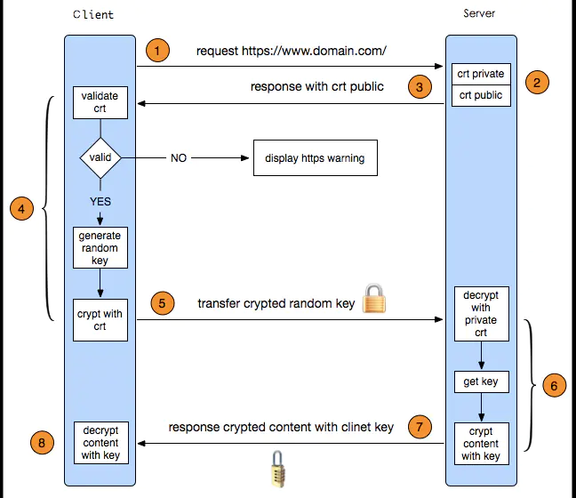
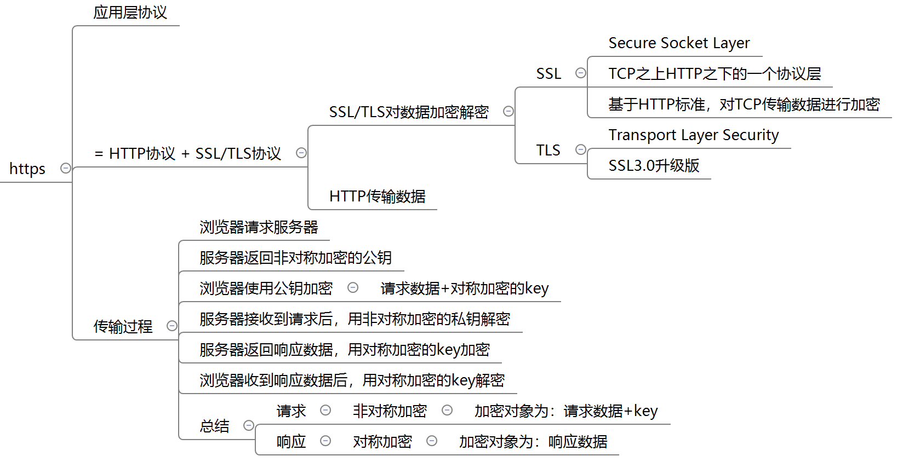

测试开发精选¶

Python¶
Python如何创建虚拟环境？
## 创建文件夹
python -m venv my_venv
## 激活
Linux:
source bin/activate
Windows:
activate.bat
python计算次方？
pow(x, y)
x ** y
super是什么？有什么作用？
super是对父类的引用.
可以提高代码复用性、可维护性.
L = [1, 2, 3, 11, 2, 5, 3, 2, 5, 3] 一行代码得出 [1, 2, 3, 5, 11]
list(set(L)) # set去重
L = [1, 2, 3, 4, 5] L[10:]的结果是？
空列表
L = [1, 2, 3, 5, 6] 如何得出 ‘12356’？
''.join([str(i) for i in L]) # int不能直接join
计算1-100的和？
from functools import reduce
result = reduce(lambda x, y: x + y, range(1, 101))
print(result)
1-10，对每个数字的平方？
result = map(lambda x:x**2,range(1,11))
for n in result:
print(n)
{“a”,”ab”,”abc”,”bc”,”cd”}输出含有c字符的元素？
result = filter(lambda x: "c" in x, {"a", "ab", "abc", "bc", "cd"})
for n in result:
print(n)
Python如何释放内存？
当一个对象的引用计数变为0时，python就会调用它的析构函数。
Python正则中search和match？
match() 只有在0位置匹配成功的话才有返回
search() 扫描整个string查找匹配
求两个列表的交集、差集、并集？
## 交集
list(set(a) & set(b))
## 差集
list(set(a) ^ set(b))
## 并集
list(set(a) | set(b))
Python传参数是传值还是传址？
实际都是传的引用。
如果是不可变对象（比如数字、字符或者元组），相对于传值。
如果是可变对象（比如字典或者列表），相当于传址。
1~9999数列中数字3出现的次数。用递推方法解出。
def count_digit(number):
return len(str(number))
def countThree(digit):
if not isinstance(digit,int):
raise TypeError('number is not int')
# digit = len(str(number))
if(digit <=0):
return 0
if(digit ==1):
return 1
return 10*countThree(digit-1) + 10 **(digit-1)
print(countThree(count_digit(9999)))
从一个数组中找出前4个最大的数，用最优解。
#快速排序：最快的n*logN
def qiuckSort(list):
if len(list)<2:
return list
mid = list[0]
left = [i for i in list[1:] if i <= mid]
right = [i for i in list[1:] if i mid]
finallyList = qiuckSort(left)+[mid] + qiuckSort(right)
return finallyList
array = [3, 0, 1, 832,23,45, 5, 5, 6,46, 9, 56, 897]
print(qiuckSort(array)[-4:])
写一段程序，删除字符串a中包含的字符串b，举例 输入a = “asdw”,b = “sd” 返回 字符串 “aw”，并且测试这个程序。
def delBString(a,b):
if not isinstance(a,str):
raise TypeError("a is not str")
if not isinstance(b,str):
raise TypeError("b is not str")
if len(a) < len(b):
raise Exception('a length must large to b length')
result = []
flag = False
i=0
la = len(a)
lb = len(b)
while i <la:
j = 0
while j < lb:
if i+j < la and a[i+j] == b[j]:
j += 1
else :
j += 1
flag = False
break
flag = True
if flag:
i += lb
else:
result.append(a[i])
i += 1
return "".join(result)
测试用例：
class TestdelInnerStringFunctions():
def setUp(self):
pass
def tearDown(self):
pass
def test_nomorl1(self):
assert delBString('asdqwe','we') == 'asdq'
def test_nomorl2(self):
assert delBString('asdqwe','0') == 'asdqwe'
def test_nomorl3(self):
assert delBString('测试asdqwe','we') == '测试asdq'
def test_nomorl4(self):
assert delBString('测试asdqwe','测试') == 'asdqwe'
def test_nomorl5(self):
assert delBString('asdqwe','') == 'asdqwe'
def test_nomorl6(self):
with pytest.raises(TypeError):
delBString('', 0)
def test_nomorl7(self):
with pytest.raises(TypeError):
delBString(0, 'as')
def test_nomorl8(self):
with pytest.raises(TypeError):
delBString(True)
def test_nomorl9(self):
with pytest.raises(Exception) as excinfo:
delBString('acd','acde')
assert "a length must large to b length" in str(excinfo.value)
assert excinfo.type == Exception
写一个方法，把字符串转为数字，比如 str=“1234”，变成 int 1234。并且测试这个程序。
def StrToInt(a):
res ,mult,flag = 0,1,1
if not isinstance(a,str):
raise TypeError("a is not str")
if a[0] =='-' or a[0] == '+':
if a[0] == '-':
flag = -1
a = a[1:]
for i in range(len(a)-1,-1,-1):
if '9' =a[i] = '0':
res +=(ord(a[i]) -48) * mult
mult = mult *10
else :
return 0
return res * flag
def test_strToInt2(self):
with pytest.raises(TypeError):
StrToInt(34)
测试用例：
def test_strToInt3(self):
assert StrToInt('测试赛') == 0
def test_strToInt4(self):
assert StrToInt('+2147689') == 2147689
def test_strToInt5(self):
assert StrToInt('45') == 45
def test_strToInt6(self):
assert StrToInt('1a33') == 0
def test_strToInt7(self):
assert StrToInt('-5') == -5
dict的items和iteritems的区别？
items，以列表方式返回，返回时没有特殊顺序。
iteritems，返回方式类似，返回的是一个迭代器对象。
Python内存管理？
内存池(memory pool)机制。预先在内存中申请一定数量的，大小相等的内存块留作备用，当有新的内存需求时，就先从内存池中分配内存给这个需求，不够了之后再申请新的内存。
Pymalloc
在析构时，也采用了内存池机制，从内存池来的内存会被归还到内存池中，以避免频繁地释放动作。
Python多进程间如何共享数据？
可以使用 multiprocessing.Value 和 multiprocessing.Array。
全局解释器锁？
python多线程有个全局解释器锁（global interpreter lock），这个锁的意思是任一时间只能有一个线程使用解释器，跟单cpu跑多个程序一个意思，大家都是轮着用的，这叫“并发”，不是“并行”。虽然看起来程序被多线程并行执行，但它们实际上只是轮流使用相同的CPU核心。
Python中读取Excel文件？
import xlrd
data = xlrd.open_workbook('excelFile.xls')
table = data.sheets()[0] # 通过索引顺序获取
table = data.sheet_by_index(0) # 通过索引顺序获取
table = data.sheet_by_name(u'Sheet1') # 通过名称获取
文件打开模式？
r 读
w 写
a 追加
b 二进制
\+ 文件指针在最开头
正则匹配中文？
re.compile(r'[\u4e00-\u9fa5]+')
``int(“1.4”)``和``int(1.4)``分别输出什么？
int(“1.4”) 输出ValueError
int(1.4) 输出1
Python垃圾回收机制有哪几种方式？
引用计数
标记清除
分代回收
不是以4、7结尾的手机号码(11位)？
tels = ["13100001234", "18912344321", "10086", "18800007777"]
re.match("1\d{9}[0-35-68-9]", tel)
提取区号和电话号码？
>>> ret = re.match("([^-]*)-(\d+)","010-12345678")
>>> ret.group()
'010-12345678'
>>> ret.group(1)
'010'
>>> ret.group(2)
'12345678'
用两种方法去空格？
replace
split + join
统计字符串中某字符出现次数？
s.count()
根据键对字典排序？
方法一，zip函数
dict(sorted(zip(dic.keys(), dic.values()), key=lambda x:x[0]))
方法二,不用zip
dict(sorted(dic.items(), key=lambda x:x[0]))
Python内建数据类型？
int
bool
str
list
tuple
dict
如何将字符串的第一个字母大写？
capitalize()函数。
什么是pickling和unpickling？
pickle模块接受任何Python对象并将其转换为字符串表示形式，并使用dump函数将其转储到文件中，此过程称为pickling。从存储的字符串中检索原始Python对象的过程称为unpickling。
range＆xrange有什么区别？
xrange 生成器
什么是Python迭代器？
迭代器是可以遍历或迭代的对象。
深拷贝和浅拷贝的区别是什么？
深拷贝是将对象本身复制给另一个对象。
浅拷贝是将对象的引用复制给另一个对象。
当退出Python时是否释放所有内存分配？
具有对象循环引用或者全局命名空间引用的变量，在Python退出是往往不会被释放。
什么是猴子补丁？
在运行时动态修改类和模块。
什么是负索引？
负索引是从右边开始检索。
如何随机打乱列表中元素，要求不引用额外的内存空间？
radom.shuffle()
请解释Python中的闭包？
如果在一个内部函数里。对外部作用域（但不是全局作用域）的变量进行引用，那么内部函数就是一个闭包。
Python运算符有哪些？
算术运算符、关系运算符、赋值运算符、逻辑运算符、位运算符、成员运算符、身份运算符。
成员运算符 in 和 not in
身份运算符 is 和 not is
Python对象和数据结构存在哪的？
所有Python对象和数据结构都位于私有堆中。
程序员无权访问吗，Python解释器负责处理。
什么是PYTHONPATH？
它是导入模块时使用的环境变量。
每当导入模块时，会查找PYTHONPATH以检查各个目录中是否存在导入的模块。解释器使用它来确定要加载的模块。
比较两个json数据是否相等？
第一步，json数据转换成字典：
dict1 = json.load(load_f1)
dict2 = json.load(load_f2)
第二部将两个字典按key排好序，然后使用zip()函数将两个字典对应的元素打包成元组。比较对应的元素的value是否相等：
for src_list, dst_list in zip(sorted(dict1), sorted(dict2)):
if str(dict1[src_list]) != str(dict2[dst_list]):
print(src_list,dict1[src_list],dst_list,dict2[dst_list])
算法¶
给定数组[5, 3, 2, 6, 1, 4]，请实现冒泡排序，从小到大。
a = [5, 3, 2, 6, 1, 4]
n = len(a)
for i in range(n - 1):
for j in range(n - 1 - i):
if a[j] > a[j + 1]:
a[j], a[j + 1] = a[j + 1], a[j]
string = “192.0.0.1?!289.0.0.1!0.0.0.0!192.163.10.28?192.0.0.1” 要求：返回一个IP数组，并且按IP最后一位排序返回。 P.S.语言随意，只需要能够正确排序返回接口。（Java、Python、Shell均可）
import re
s = "192.0.0.1?!289.0.0.1!0.0.0.0!192.163.10.20?192.0.0.1"
ips = re.split(r"\?!|!|\?", s)
def lastOne(i):
return i.split('.')[-1]
ips.sort(key=lastOne)
print(ips)
全排列，是把一堆字符按照一定的顺序排列起来，所有可能的组合。 比如，“123”的全排列为“123”、“132”、“213”、“231”、“312”、“321”。 请用Python实现全排列。
test_list = ['x', 'y', 'z']
def permutations(sequence, i):
if i == (len(sequence) - 1):
print(str(sequence))
else:
for j in range(i, len(sequence)):
sequence[i], sequence[j] = sequence[j], sequence[i]
permutations(sequence, i + 1)
sequence[i], sequence[j] = sequence[j], sequence[i]
permutations(test_list, 0)
给定一个不确定的Json对象，求Json子节点的最大深度。
package test;
import net.sf.json.JSONObject;
import java.util.Iterator;
public class AProblemDiGui {
static int count = 0;
public static void main(String[] args) {
String param = "{\"ext_meta\":{\"id\":4332021940090402,\"uid\":0,\"similarity\":1,\"blockOid\":{\"id\":4332021940090402,\"uid\":0,\"similarity\":\"1239545\",\"blockOid\":null,\"blockTopicMd5\":null},\"blockTopicMd5\":{\"id\":4332021940090402,\"uid\":0,\"similarity\":\"1239545\",\"blockOid\":{\"id\":4332021940090402,\"uid\":0,\"similarity\":\"1239545\",\"blockOid\":null,\"blockTopicMd5\":null},\"blockTopicMd5\":null}}, \"msg\":\"found\",\"ext_meta1\":{\"id\":4332021940090402,\"uid\":0,\"similarity\":\"1239545\",\"blockOid\":null,\"blockTopicMd5\":null}}";
System.out.println(getLength(param));
}
static public int getLength(String temp) {
Boolean flag = true;
JSONObject jsonObject = JSONObject.fromObject(temp);
Iterator iteratorValue = jsonObject.values().iterator();
Iterator iteratorKey = jsonObject.keySet().iterator();
while (iteratorValue.hasNext()) {
String value = iteratorValue.next().toString();
System.out.println(iteratorKey.next() + ":" + value);
if (value.startsWith("{")) {
if (flag) { //单层只记录一次
count++;
flag = false;
}
int tmp = getLength(value);
if (tmp > count)
count = tmp;
}
}
return count;
}
}
算法性能主要受哪些因素影响？
编程语言；数据结构；数据类型；数据规模；运行环境。
两个乒乓球队进行比赛，各出三人。甲队为a,b,c三人，乙队为x,y,z三人。已抽签决定比赛名单。有人向队员打听比赛的名单。a说他不和x比，c说他不和x,z比。请编程序找出三队赛手的名单。
import itertools
for i in itertools.permutations('xyz'):
if i[0] != 'x' and i[2] != 'x' and i[2] != 'z':
print('a vs %s, b vs %s, c vs %s' % (i[0], i[1], i[2]))
给你一个字符串，你怎么判断是不是ip地址？手写这段代码。
public static void main(String[] args) {
Scanner scanner = new Scanner(System.in);
String ipStr = scanner.next();
boolean isIpLegal = isIpLegal(ipStr);
if (isIpLegal) {
System.out.println(ipStr + " 合法");
} else {
System.out.println(ipStr + " 非法");
}
}
public static boolean isIpLegal(String ipStr) {
String ipRegEx = "^([1-9]|([1-9][0-9])|(1[0-9][0-9])|(2[0-4][0-9])|(25[0-5]))(\\.([0-9]|([1-9][0-9])|(1[0-9][0-9])|(2[0-4][0-9])|(25[0-5]))){3}$";
Pattern pattern = Pattern.compile(ipRegEx);
Matcher matcher = pattern.matcher(ipStr);
if (matcher.matches()) {
return true;
}
else {
return false;
}
}
判断闰年的标准是：能整除4且不能整除100，能整除400。设定合法的年份为1-9999。
public class Test2 {
public static void main(String[] args) {
Scanner in = new Scanner (System.in);
int year=in.nextInt();
if(year<=0||year>9999) {
System.out.println("请输入正确的年份");
}
if((year%4==0&&year%100!=0)||year%400==0) {
System.out.println("闰年");
} else {
System.out.println("不是闰年");
}
}
}
二叉树的深度计算？
如果一棵树只有一个结点，它的深度为1。
如果根结点只有左子树而没有右子树，那么树的深度应该是其左子树的深度加1；同样如果根结点只有右子树而没有左子树，那么树的深度应该是其右子树的深度加1。计算左子树深度和右子树深度同理（即将当前左或右子树节点看做根节点）。
如果既有右子树又有左子树，那该树的深度就是其左、右子树深度的较大值加1。
class Solution:
#二叉树的深度
def TreeDepth(self, pRoot):
# write code here
global maxdepth#全局变量保存当前最长的路径长度
maxdepth=0
def DfsTree(root,depth=0):#depth是当前的路径长度
global maxdepth
if root:#节点非空，路径长度加1
depth+=1
if root.left:#左子树非空，继续遍历左子树
DfsTree(root.left,depth)
if root.right:#右子树非空，继续遍历右子树
DfsTree(root.right,depth)
if not root.left or root.right:#左右子树都是空的，即该节点是一个叶子结点，则判断depth是不是最长的路径
if depth>maxdepth:
maxdepth=depth
if root:
DfsTree(root)
return maxdepth
Web开发¶
浏览器同源策略包括哪几项？
域名 端口 协议
跨域header里需要加什么？
请求header
Origin: http://foo.example
响应header
Access-Control-Allow-Origin:上面origin的地址
Access-Control-Allow-Methods:POST,GET
Access-Control-Allow-Credentials:true
Access-Control-Allow-Headers:Origin,Content-Type,Accept,token,X-Requested-With
URL由哪三部分组成？
协议
主机IP地址(有时也包括端口号)
资源的地址，如目录和文件名等
URL和URI的区别是什么？
URI，Uniform Resource Identifier，统一资源标识符，用来唯一的标识一个资源。
URL，Uniform Resource Locator，统一资源定位器，是URI的子集，用资源定位的方式实现了URI。
Cookie和Session的区别？
Cookie是客户端保存用户信息的一种机制，用来记录用户的一些信息，可以在 Cookie里面记录一个Session ID，来实现Session跟踪。
Session是在服务端保存的一个数据结构，用来跟踪用户的状态，这个数据可以保存在集群、数据库、文件中。
如果客户端的浏览器禁用了Cookie怎么办？
一般这种情况下，会使用一种叫做URL重写的技术来进行会话跟踪，即每次HTTP交互，URL后面都会被附加上一个诸如sid=xxxxx这样的参数，服务端据此来识别用户。
描述下应用架构？
从下往上是基础组件、领域服务、应用服务、业务支撑。
客户端，包括POS、移动端、第三方平台通过网关认证后，接入到应用层。
应用层包括根据业务拆分的很多个微服务。
下层是领域服务，包括数据同步下行、事件消费、全域订单查询、核心操作等。
底层是一些基础组件，包括分布式job、异步文件队列、db sharding路由配置、断路器、缓存、推送、补偿、轨迹埋点、业务监控等。
延伸：
埋点是通过植入代码，对用户行为数据进行采集，统计，分析。
正则匹配的问号是什么意思？
正则匹配默认是贪婪匹配，也就是匹配尽可能多的字符。
?是指非贪婪。
ORM和DB如何对应？
类 -- 表
对象 -- 行
属性 -- 字段
网络¶
http和https的区别？
http是明文传输，https是ssl加密传输，比http更安全。
http默认端口是80，https默认端口是443。
http连接是无状态的，https是需要身份认证的。
https需要到ca申请证书。
如何理解HTTP无状态无连接？
无状态：当客户端发送请求给服务器的时候，服务器并不知道是谁发的。
无连接：每个请求/应答，客户端和服务器都要新建一个连接，完成之后立即断开连接。
延伸：Cookie/Session用来保存状态。Keep-Alive用来保持连接。
TCP/IP五层协议和OSI七层协议？
TCP/IP五层协议：物理层、数据链路层、网络层、传输层、应用层。
OSI七层协议：物理层、数据链路层、网络层、传输层、会话层、表示层、应用层。
TCP三次握手四次挥手？
三次握手
1.客户端发送SYN信号，表示告诉服务器，我要建立连接。
2.服务器返回ACK=1和SYN=1给客户端，表示我已经接收到了客户端的请求，并接收了请求。
3.客户端收到来自服务端响应后，知道服务端已经接受连接请求，再次发送ACK给服务器，确认服务端的SYN。
四次挥手
1.主动方A发送一个FIN(终止信号)给被动方B，表示要终结主动方A到被动方B的连接。
2.被动方B收到了FIN信号，返回ACK信号给主动方，表示从主动方到被动方的连接关闭了，也就是主动方不能再发送数据给被动方。
3.被动方B在发送完数据后，给主动方A发送一个FIN信号，请求要终结被动方B到主动方A的连接。
4.主动方A收到了FIN信号，返回ACK信号给被动方B，表示从被动方B到主动方A的连接关闭了，也就是被动方不能再发送数据给主动方。
一个完整http请求会经历哪些过程？
浏览器发起请求
解析域名得到ip进行TCP连接
浏览器发送请求数据和请求头信息
服务器应答
服务器返回响应头信息和响应数据
关闭TCP连接
浏览器收到响应数据
HTTPS的原理？


路由器，集线器，交换机的区别？
路由器 用于连接不同网段并且找到网络中数据传输最合适的路径。
集线器 将一些pc机连起来组成一个局域网。
交换机 与集线器相似，区别在于集线器共享带宽，交换机独享带宽。
Internet物理地址和IP地址转换采用什么协议？
ARP (Address Resolution Protocol)
常见协议位于哪一层？
应用层（http协议）
传输层（tcp或udp协议）
网络层（ip协议）
数据链路层（网卡、路由器等）
dns解析
HTTP xxx状态码代表什么？
状态码 说明
1xx 信息，服务器收到请求，需要请求者继续执行操作
2xx 成功，操作被成功接收并处理
3xx 重定向，需要进一步的操作以完成请求
4x 客户端错误，请求包含语法错误或无法完成请求
5xx 服务器错误，服务器在处理请求的过程中发生了错误
get和post请求有什么区别？
get传输数据量小，但是效率更高。
post可以传输更多数据，一般来说是会更安全，不过现在很多抓包的，也不一定安全。
get只支持ASCII字符，post支持标准字符集。
TCP UDP协议区别？
TCP面向连接，UDP是无连接的。
TCP提供可靠的服务，UDP尽最大努力交付，即不保证可靠交付。
UDP具有较好的实时性，工作效率比TCP高。
TCP连接只能是点到点的，UDP支持一对一，一对多，多对一和多对多。
TCP对系统资源要求较多，UDP对系统资源要求较少。
如何保证TCP的可靠性？
检验和、序列号、确认应答ACK机制、超时重传机制、连接管理机制、流量控制、拥塞控制。
请你说一说PC网络故障，以及如何排除障碍？
ping远程
无线信号/有线连接
IP DNS 网关 设置
ping本机IP检查驱动
ping网关检查网关设备
请问你怎么测试网络协议？
1、一致性测试：检测协议实现本身与协议规范的符合程度
2、互操作性测试：基于某一协议检测不同协议实现间互操作互通信的能力
3、性能测试：检测协议实现的性能指标，比如数据传输速度，连接时间，执行速度，吞吐量，并发度
4、健壮性测试：检测协议是现在各种恶劣环境下运行的能力，比如注入干扰报文，通信故障，信道被切断
怎么理解IP、TCP、UDP、HTTP、FTP？
把IP想像成一种高速公路，它允许其它协议在上面行驶并找到其它电脑的出口。TCP和UDP是高速公路上的“卡车”，它们携带的货物就是像HTTP，FTP。
Postman授权方式？
- Inherit auth from parent
- No Auth
- Bearer Token
- Basic auth
- Digest Auth
- OAuth 1.0
- OAuth 2.0
- Hawk Authentication
- AWS Signature
- NTLM Authentication [Beta]
默认端口？
FTP默认端口 21
SSH（安全登录）、SCP（文件传输）、端口号重定向，默认的端口号为22
HTTP的报文段是什么样的？
起始行（start line）：描述请求或响应的状态
头部字段（header）：以 key:value 的形式展示
空行（CRLF）：区分两者的边界
数据实体（entity/ body）：实际要传输的数据，可以是文本，也可以是图片、文件、视频等二进制数据
TCP拥塞控制方法？
慢启动（slow-start）、拥塞避免（congestion avoidance）、快速重传（fast retransmission）和快速恢复（fastrecover）。
TCP流量控制方法？
滑动窗口协议
DNS解析过程？
1 浏览器先检查自身缓存中有没有被解析过的这个域名对应的ip地址，如果有，解析结束。
2 如果浏览器缓存中没有，浏览器会检查操作系统缓存中有没有对应的已解析过的结果。
3 如果至此还没有命中域名，才会真正的请求本地域名服务器（LDNS）来解析这个域名。
4 如果LDNS仍然没有命中，就直接跳到Root Server 域名服务器请求解析。
5 Root Server域名服务器返回给LDNS一个所查询域的主域名服务器地址（gTLD Server，国际顶尖域名服务器，如.com .cn .org等）。
6 此时LDNS再发送请求给上一步返回的gTLD。
7 接受请求的gTLD查找并返回这个域名对应的Name Server的地址。
8 Name Server根据映射关系表找到目标ip，返回给LDNS。
9 LDNS缓存这个域名和对应的ip。
10 LDNS把解析的结果返回给用户，缓存到本地系统缓存中。
TCP和UDP用一个端口发送信息是否冲突？
不冲突。因为数据接收时根据五元组(传输协议，源IP，目的IP，源端口，目的端口)判断接受者的。
HTTP最常见的请求头？
Host
Cookie
User-Agent
Referer
Content-Length
Accept-Encoding
Authorization
HTTP最常见的响应头？
Allow
Content-Type
Content-Length
Content-Encoding
Date
Last-Modified
数据库¶
什么是NoSQL数据库？
泛指非关系型数据库。
Not Only SQL
什么是关系型数据库？
用行列表格的形式存储数据，表之间能相互连接的数据库。
MySQL join、left join、right join区别。
join
只显示完全匹配on条件的数据
等价于 inner join
等价于 where 即多表联合查询
left join
保留左表数据，右表不匹配的为NULL
等价于 left outer join
right join
保留右表数据，左表不匹配的为NULL
等价于 right outer join
mysql分表的原因？
一张表数据量大了以后，会出现性能问题，需要做分表，减小数据库压力，提高性能。
mysql分表的方式？
垂直分表：将部分字段分离出来，设计成分表，根据主表的主键关联。
水平分表：将相同字段表中的记录按照某种Hash算法进行拆分多个分表。
衡量SQL的性能好坏的标准？
执行耗时短
资源开销小
执行计划好（调用&解析次数）
什么时候做读写分离？什么时候做分库分表？
访问量大的做读写分离
数量大的做分库分表
``count(*)``和``count(1)``和``count(列名)``区别？执行效率上？
执行效果上：
count(*)包括了所有的列，相当于行数，在统计结果的时候，不会忽略列值为NULL
count(1)包括了忽略所有列，用1代表代码行，在统计结果的时候，不会忽略列值为NULL
count(列名)只包括列名那一列，在统计结果的时候，会忽略列值为空
执行效率上：
列名为主键，count(列名)会比count(1)快
列名不为主键，count(1)会比count(列名)快
如果表多个列并且没有主键，则count(1)的执行效率优于count(*)
如果有主键，则 select count(主键)的执行效率是最优的
如果表只有一个字段，则 select count(*)最优
某个表格中有10条一模一样的数据，现在要删掉其中的9条，请你写一下sql语句。
delete * from table_name limit 9
MySQL中char和varchar的区别？
char：定长，范围是0～255，效率高
varchar：不定长，最长是64k，效率偏低
延伸：
char和varchar可以有默认值，text不能指定默认值。
数据库连接泄露的含义？
没有正确地关闭Connection、Statement和ResultSet资源，连接得不到释放，可用连接越来越少。
索引的优点与不足?
优点：
提高数据的检索速度；
加快表与表之间的连接；
减少服务器需要扫描的数据量；
唯一性索引可以保证表中数据的唯一性。
缺点：
创建索引需要时间；
索引需要占用物理空间；
修改数据时，索引也需要动态维护。
mysql日期获取？
## 当前时间
select now()
## 格式化，H24小时制，h12小时制
select date_format(now(), '%Y-%m-%d %H:%i:%s')
## 字符串转日期
select str_to_date('2020-04-18 21:42:23', '%Y-%m-%d %H:%i:%s')
主键、外键的作用？
主键：表记录的唯一标识，保证数据的唯一性。
外键：用于与另一张表关联，保证了数据的完整性。
索引的数据结构是什么？
B+树。
数据库事务四大特性？
原子性、一致性、隔离性、持久性。
脏读和幻读？
脏读。B事务修改了一个数据并未提交，A事务读取了这个数据，然后B事务回滚了，最后A又读取了一次，两次读取的数据不一致。
幻读。A事务更新了某个字段，B事务又插入了一条新的记录，导致A事务认为自己没有完全更新过来，就像出现幻觉一样。
索引是什么？
索引是由表或者视图中的一列或多列生成的键。
mysql4大特性？
ACID 原子性、一致性、隔离性、持久性
mysql4大隔离级别？
读未提交、读已提交、可重复读、可串行化
非聚集索引和聚集索引？
非聚集索引。B+树的数据结构中存储的内容实际上是实际数据的地址值。也就是说它的索引和实际数据是分开的，只不过使用索引指向了实际数据。
聚集索引。B+树的数据结构中存储的是实际的数据。
Redis事务功能是如何实现的？
Redis事务功能是通过MULTI、EXEC、DISCARD和WATCH 四个原语实现的。
Redis会将一个事务中的所有命令序列化，然后按顺序执行。redis在事务失败时不支持回滚。事务中的命令出现错误，那么所有的命令都不会执行。事务中出现运行错误，那么正确的命令会被执行。
MULTI命令用于开启一个事务，它总是返回OK。
当EXEC命令被调用时，所有队列中的命令才会被执行。
调用DISCARD，客户端可以清空事务队列，并放弃执行事务，并且客户端会从事务状态中退出。
WATCH命令可以为Redis事务提供check-and-set（CAS）行为。可以监控一个或多个键。
Redis的操作为什么是原子性的？
因为Redis是单线程的。
单线程容易实现，避免了不必要的上下文切换，CPU也不会成为瓶颈。
Redis的API是原子性的操作，那么多个命令在并发中也是原子性的吗？
不一定。多个命令组合起来就不具备原子性了。
Redis常见性能问题？
Master写内存快照，save命令调度rdbSave函数，会阻塞主线程的工作。
AOF文件会不断增大，会影响Master重启的恢复速度。
AOF在重写的时候会占大量的CPU和内存资源，导致服务load过高，出现短暂服务暂停现象。
主从复制。
单点故障。
为什么Redis速度快？
1、纯内存操作。
2、单线程操作，避免了频繁的上下文切换。
3、采用了非阻塞I/O多路复用机制。
redis的过期策略？
定期删除+惰性删除。
为什么redis不采用定时删除？
定时删除，不同于定期删除，而是用一个定时器来负责监视key，过期则自动删除。虽然内存及时释放，但是十分消耗CPU资源。
什么是惰性删除？
redis不是每个100ms将所有的key检查一次，而是随机抽取进行检查(如果每隔100ms,全部key进行检查，redis岂不是卡死)。
惰性删除，在你获取某个key的时候，redis会检查一下，这个key如果设置了过期时间是否过期了？如果过期了此时就会删除。
采用定期删除+惰性删除就没其他问题了么？
不是的，如果定期删除没删除key。然后你也没即时去请求key，也就是说惰性删除也没生效。这样，redis的内存会越来越高。那么就应该采用内存淘汰机制。
阻塞I/O、非阻塞IO、I/O多路复用分别指什么？
1. 通常IO操作都是阻塞I/O的。就是等着数据过来，才进行读写操作。
2. 非阻塞IO，如果没有数据收到，就立刻返回一个错误。这样是不会阻塞线程了，但是你还是要不断的轮询来读取或写入。
3. I/O多路复用，是指使用一个线程来检查多个文件描述符的就绪状态，如果有一个文件描述符就绪，则返回，否则阻塞直到超时。
redis的数据类型？
五种，string（字符串），hash（哈希），list（列表），set（集合）及zset(sorted set：有序集合)。
Memecache和Redis区别？
Memecache把数据全部存在内存之中，断电后会挂掉，数据不能超过内存大小。
Redis有部分存在硬盘上，Redis可以持久化数据。
Redis的速度比memcached快很多。
Redis支持数据的备份，即master-slave模式的数据备份。
热点数据和冷数据是什么？
热点数据，是指读取很频繁的数据，适合做缓存。
冷数据，是指读取少，不适合做缓存。可能还没有再次访问到就已经被挤出内存，占用内存。
缓存雪崩、缓存穿透、缓存预热、缓存更新、缓存降级？
缓存雪崩。由于原有缓存失效，新缓存未到期间 (例如：我们设置缓存时采用了相同的过期时间，在同一时刻出现大面积的缓存过期)，所有原本应该访问缓存的请求都去查询数据库了，而对数据库CPU和内存造成巨大压力，严重的会造成数据库宕机。从而形成一系列连锁反应，造成整个系统崩溃。
缓存穿透。用户查询数据，在数据库没有，自然在缓存中也不会有。这样就导致用户查询的时候，在缓存中找不到，每次都要去数据库再查询一遍，然后返回空（相当于进行了两次无用的查询）。这样请求就绕过缓存直接查数据库，这也是经常提的缓存命中率问题。
缓存预热。系统上线后，将相关的缓存数据直接加载到缓存系统。
缓存更新。自定义清理缓存后，更新。
缓存降级。当访问量剧增、服务出现问题（如响应时间慢或不响应）或非核心服务影响到核心流程的性能时，仍然需要保证服务还是可用的，即使是有损服务。对于不重要的缓存数据，可以采取服务降级策略，例如一个比较常见的做法就是，Redis出现问题，不去数据库查询，而是直接返回默认值给用户。
服务降级的目的，是为了防止Redis服务故障，导致数据库跟着一起发生雪崩问题。
Redis持久化机制？
通过持久化机制把内存中的数据同步到硬盘文件来保证数据持久化。
当Redis重启后通过把硬盘文件重新加载到内存，就能达到恢复数据的目的。
延伸：
Redis将内存中的数据利用RDB和AOF的形式保存到硬盘中。
AOF：Redis会将每一个收到的写命令都通过Write函数追加到文件最后，类似于MySQL的binlog。当Redis重启是会通过重新执行文件中保存的写命令来在内存中重建整个数据库的内容。
RDB是Redis默认的持久化方式。按照一定的时间周期策略把内存的数据以快照的形式保存到硬盘的二 进制文件。即Snapshot快照存储。
Redis持久化实现？
单独创建fork()一个子进程，将当前父进程的数据库数据复制到子进程的内存中，然后由子进程写入到临时文件中，持久化的过程结束了，再用这个临时文件替换上次的快照文件，然后子进程退出，内存释放。
说一下分布式和集群联系和区别？
一个业务拆分为多个子业务，部署在不同的服务器上实现相同的业务就是分布式。
将多台服务器集中在一起，就可以叫做集群。
一般用于解决访问量大、并发量高、海量数据、分布式的问题。
集群是个物理形态，分布式是个工作方式。
集群可能运行着一个或多个分布式系统，也可能根本没有运行分布式系统。
分布式系统可能运行在一个集群上，也可能运行在不属于一个集群的多台（2台也算多台）机器上。
redis集群方式？
主从复制
哨兵模式
Redis-Cluster集群
为什么一般集群都要用3台服务器来组建？
为了保证选举过程最后能选出leader，就一定不能出现两台机器得票相同，所以就是2n+1，至少3台。
延伸：
LOOKING：当前Server不知道leader是谁，正在搜寻。
LEADING：当前Server即为选举出来的leader。
FOLLOWING：leader已经选举出来，当前Server与之同步。
什么是池化技术？
池化技术就是提前保存大量的资源，通过复用来提升性能。
池化技术主要有线程池，内存池，连接池，对象池等。
Redis+Cookie如何实现购物车？
当点击“加入购物车”按钮时，先获取用户登录凭证，如果没有登录，就将商品的id保存在Redis未登录购物车中，当拦截器拦截到用户登录时，把购物车的内容合并到数据库中登录后购物车里，通过json解析商品id查到商品信息，所以购物车中的商品信息是可以变化的。
请你谈谈单点登录的实现方案？
单点登录使用了Redis+Cookie实现。
把用户信息放在Redis中。Key作为用户凭证存放在Cookie中放在客户端。
通过获取Cookie凭证判断用户是否有登录。
延伸：
单点登录SSO（Single Sign On）。
单点登录，在一个多系统共存的环境下，用户在一处登录后，就不用在其他系统中登录。
redis应用场景？
缓存数据服务器 SSO单点登录
高速读写 秒杀高可用
分布式锁 秒杀数据一致性
数据共享 库存数据
redis空间不够，怎么保证经常访问的数据？
淘汰策略：在redis.conf里面配置，来保证热点数据保存在reids里面。
Mongo 如果在一个分片（shard）停止或者很慢的时候，我发起一个查询会怎样？
停止。除非查询设置了“Partial”选项，否则查询会返回一个错误。
很慢。MongoDB会等待它的响应。
延伸：
MongoDB分片是基于区域（range）的。
Mongo数据文件为什么很大？
MongoDB会积极的预分配预留空间来防止文件系统碎片。
延伸：
MongoDB没有使用传统的锁或者复杂的带回滚的事务。
MongoDB用户不能添加null，只能添加空对象{}。但是Mongo是有空值null的。
Mongo常用语法？
查看Mongo正在使用的连接：
db._adminCommand("connPoolStats");
可以使用 pretty() 方法，以易读的方式来读取数据：
>db.COLLECTION_NAME.find().pretty()
AND条件：
>db.COLLECTION_NAME.find({key1:value1, key2:value2}).pretty()
OR条件：
>db.COLLECTION_NAME.find(
{
$or: [
{key1: value1}, {key2:value2}
]
}
).pretty()
Limit条数：
>db.COLLECTION_NAME.find().limit(NUMBER)
排序：
>db.COLLECTION_NAME.find().sort({KEY:1}) # 1为升序，2为降序
聚合：
>db.COLLECTION_NAME.aggregate(AGGREGATE_OPERATION)
延伸：
MySql：table row column
Mongo：collection document field
MongoDB成为最好NoSQL数据库的原因是什么？
面向文件的、高性能、高可用性、易扩展性、丰富的查询语言。
Redis和MongoDB的区别？
1.Redis数据全部存在内存，定期写入磁盘。MongoDB数据存在内存，当内存不够时，只将热点数据放入内存，其他数据存在磁盘。
2. Redis支持的数据结构丰富。MongoDB 数据结构比较单一。
3.当物理内存不够用的时候，redis和mongodb都会使用虚拟内存。
4.mongodb依赖内存，TPS较高；Redis依赖内存，TPS非常高。性能上Redis优于MongoDB。
5.Redis事务支持比较弱，只能保证事务中的每个操作连续执行；mongodb不支持事务。
扩展：
关系型数据库与NoSQL的区别：数据存储结构的不同。
为什么有NoSQL?
增加字段需要-->无格式
高并发需要-->转向内存
水平拓展需要-->以前是分库分表
索引设计的时候要注意什么？
索引字段长度不能太长
索引的个数不能太多
哪些方法可以提高数据库查询效率？
建立索引，利用索引
只查询必要的字段
合理的处理NULL字段
慎用like等通配符
MySQL存储引擎？
InnoDB
MyISAM
Java¶
Java的socket的server和client怎么实现，怎么互相发消息？
// server
ServerSocket server = new ServerSocket(port);
Socket socket = server.accept();
InputStream in = socket.getInputStream();
// client
Socket socket = new Socket(host, port);
out = socket.getOutputStream();
out.write()
out.flush()
JVM中程序计数器区会不会报OOM异常？
不会。程序计数器存储的内容仅仅就是下一条待执行的命令的地址。
说说乐观锁和悲观锁？
乐观锁，乐观的，假设别人不会修改数据，不会上锁。适用于写比较少的情况下（多读场景）。可以省去锁的开销，加大系统的吞吐量。
悲观锁，悲观的，假设每次拿数据别人都会修改，上锁。适用于多写的场景，因为多写冲突会比较多，上层应用会不断的进行retry，这样反倒是降低了性能。
延伸：
Java中的乐观锁
java.util.concurrent.atomic
Java中的悲观锁
synchronized和ReentrantLock
乐观锁一般会使用版本号机制或CAS算法实现。
线程sleep和wait的区别？
sleep是让线程休眠，wait是将调用者的线程挂起等待。
sleep是Thread的静态方法，wait是Object的方法。
sleep不会释放同步锁，wait会释放同步锁。
Spring定时任务@Scheduled注解？
* * * * * * *
1 秒（0~59）
2 分钟（0~59）
3 小时（0~23）
4 天（0~31）
5 月（0~11）
6 星期（1~7 1=SUN 或 SUN，MON，TUE，WED，THU，FRI，SAT）
7 年份（1970－2099） // 可能没有
由于"月份中的日期"和"星期中的日期"这两个元素互斥的,必须要对其中一个设置?，表示不指定值
“L” 字符仅被用于天（月）和天（星期）两个子表达式，它是单词“last”的缩写。如果在“L”前有具体的内容，它就具有其他的含义了。例如：“6L”表示这个月的倒数第６天
例子：
"0 0 12 * * ?" 每天中午12点触发
"0 0-5 14 * * ?" 在每天下午2点到下午2:05期间的每1分钟触发
"0 0/5 14 * * ?" 在每天下午2点到下午2:55期间的每5分钟触发
“0/5”表示从第0分钟开始，每15分钟
"0 15 10 L * ?" 每月最后一日的上午10:15触发
"0 15 10 ? * 6L" 每月的最后一个星期五上午10:15触发
Java方法参数匹配顺序？
1）精确匹配
2）基本数据类型（自动转换成更大范围）
3）封装类（自动拆箱与装箱）
4）子类向上转型依次匹配
5）可变参数匹配
Tomcat三种运行模式？
BIO，一个线程处理一个请求。
NIO，利用Java的异步IO处理，可以通过少量的线程处理大量的请求。
APR，即Apache Portable Runtime，从操作系统层面解决io阻塞问题。
延伸：
Tomcat单进程多线程。
Nginx多进程，一个主进程管理多个worker子进程。
ArrayList和LinkedList区别？
ArrayList基于数组实现。LinkedList基于双向链表实现。
随机访问，ArrayList优于LinkedList。
插入和删除，LinkedList优于ArrayList。
LinkedList比ArrayList更占内存，因为LinkedList的节点除了存储数据，还存储了两个引用，一个指向前一个元素，一个指向后一个元素。
将两个升序链表合并为一个新的升序链表并返回。新链表是通过拼接给定的两个链表的所有节点组成的。手写代码？
示例：
输入：1->2->4, 1->3->4
输出：1->1->2->3->4->4
两个链表头部较小的一个与剩下元素的 merge 操作结果合并。
/**
* Definition for singly-linked list.
* struct ListNode {
* int val;
* ListNode *next;
* ListNode(int x) : val(x), next(NULL) {}
* };
*/
class Solution {
public ListNode mergeTwoLists(ListNode l1, ListNode l2) {
if (l1 == null) {
return l2;
}
else if (l2 == null) {
return l1;
}
else if (l1.val < l2.val) {
l1.next = mergeTwoLists(l1.next, l2);
return l1;
}
else {
l2.next = mergeTwoLists(l1, l2.next);
return l2;
}
}
}
Java接口与抽象类的区别？
从设计层面来说，抽象类是对类的抽象，是一种模板设计，接口是行为的抽象，是一种行为的规范。
【方法】接口只能有抽象方法，抽象类可以有抽象方法和非抽象方法。Java8以后，接口可以直接定义default和static方法了。抽象类可以有protect和private方法。
【成员变量】接口中的成员变量默认是static和final的，抽象类可以像常规的对象一样定义各种成员变量。可以是非static和final的。
【实现】接口不能实现其他的接口，只能继承一个其它的接口。抽象类可以实现多个接口。
【构造器】抽象类可以有构造器，接口不能有构造器。
【main方法】抽象类可以有main方法，并且我们可以运行它。接口不能有main方法。
【速度】抽象类速度更快一些，接口需要时间寻找类中的实现方法。
说说继承和多态？
继承是指这样一种能力：它可以使用现有类的所有功能，并在无需重新编写原来类的情况下对这些功能进行扩展。
多态是指，使用父对象的地方，可以用子对象来代替，这样在赋值之后，父对象就可以根据当前赋值给它的子对象的特性以不同的方式运行。
实现多态，有两种方式，覆盖和重载。两者的区别在于：覆盖在运行时决定，重载是在编译时决定。并且覆盖和重载的机制不同。
Java如何创建多线程？
继承Thread类
实现Runnable接口
使用Callable和Future创建线程
有三个线程T1，T2，T3，怎么确保它们按顺序执行？
public class JoinTest2 {
// 1.现在有T1、T2、T3三个线程，你怎样保证T2在T1执行完后执行，T3在T2执行完后执行
public static void main(String[] args) {
final Thread t1 = new Thread(new Runnable() {
@Override
public void run() {
System.out.println("t1");
}
});
final Thread t2 = new Thread(new Runnable() {
@Override
public void run() {
try {
//引用t1线程，等待t1线程执行完
t1.join();
} catch (InterruptedException e) {
e.printStackTrace();
}
System.out.println("t2");
}
});
Thread t3 = new Thread(new Runnable() {
@Override
public void run() {
try {
//引用t2线程，等待t2线程执行完
t2.join();
} catch (InterruptedException e) {
e.printStackTrace();
}
System.out.println("t3");
}
});
t3.start();
t2.start();
t1.start();
}
}
Thread 类中的start()和 run()方法有什么区别？
start()方法被用来启动新创建的线程，而且start()内部调用了run()方法，这和直接调用run()方法的效果不一样。当你调用run()方法的时候，只会是在原来的线程中调用，没有新的线程启动，start()方法才会启动新线程。
线程安全的单例模式？
//延迟加载+Synchronized
public final class ThreadSafeSingleton
{
private static ThreadSafeSingleton singObj = null;
private ThreadSafeSingleton(){
}
public static Synchronized ThreadSafeSingleton getSingleInstance(){
if(null == singObj ) singObj = new ThreadSafeSingleton();
return singObj；
}
}
说一下垃圾回收机制？
对内存堆中长时间没有使用的对象或没有引用的对象进行清除和回收，从而释放占用的空间，防止内存泄露。
Java异常处理机制？
在方法中用 try catch 语句捕获并处理异常，catch 语句可以有多个，用来匹配多个异常。
对于处理不了的异常或者要转型的异常，在方法的声明处通过 throws 语句拋出异常，即由上层的调用方法来处理。
Java集合分为哪两大类？
Map和Collection。
JVM中的内存分为哪五个部分？
方法区、堆、虚拟机栈、本地方法栈、程序计数器。
方法区：存储加载的class字节码，通过该区域我们能寻址到类中的方法的入口。除此之外，方法区还包括运行时常量区和静态常量区。这个区域是所有线程共享的。
堆：存储new出来的对象，垃圾回收器主要监控和回收的就是这块区域。在堆里面不断创建对象但是垃圾回收器不回收，就有可能造成OutOfMemoryError错误。这个区域也是线程共享的。
虚拟机栈：存储所有被调用的java方法的上下文。push和pop。倘若在main方法里面递归调用main方法，则虚拟机栈则会被消耗光资源，造成StackOverflowError错误。这个区域是线程隔离的，也就是说每个线程都有一个虚拟机栈。
本地方法栈：本地方法栈与虚拟机栈类似，只不过本地方法栈中存储所有被调用的本地native方法的上下文。这个区域也是线程隔离的。
程序计数器：存储着CPU下一条指令的地址，也就是说记录着现在程序执行到了哪里，执行到了那条语句，哪个指令。这个区域也是线程隔离的。
了解过GcRoot吗？
GcRoot是垃圾回收算法中判断一个对象是否可以回收的一种算法，判断对象到达GcRoot的路径是否还有可达，即是否有可引用链。
可作为GC Roots的对象：
虚拟机栈（栈帧中的本地变量表）中引用的对象
方法区中类静态属性引用的对象
方法区中常量引用的对象
本地方法栈中JNI（Native方法）引用的对象
Java内存溢出常见情况？
java.lang.OutOfMemoryError: Java heap space ------>java堆内存溢出，此种情况最常见，一般由于内存泄露或者堆的大小设置不当引起。对于内存泄露，需要通过内存监控软件查找程序中的泄露代码，而堆大小可以通过虚拟机参数-Xms,-Xmx等修改。
java.lang.OutOfMemoryError: PermGen space ------>java永久代溢出，即方法区溢出了，一般出现于大量Class或者jsp页面，或者采用cglib等反射机制的情况，因为上述情况会产生大量的Class信息存储于方法区。此种情况可以通过更改方法区的大小来解决，使用类似-XX:PermSize=64m -XX:MaxPermSize=256m的形式修改。另外，过多的常量尤其是字符串也会导致方法区溢出。
java.lang.StackOverflowError ------> 不会抛OOM error，但也是比较常见的Java内存溢出。JAVA虚拟机栈溢出，一般是由于程序中存在死循环或者深度递归调用造成的，栈大小设置太小也会出现此种溢出。可以通过虚拟机参数-Xss来设置栈的大小。
Java类加载机制？
类加载的过程包括了加载、验证、准备、解析、初始化五个阶段。
JVM将class文件字节码文件加载到内存中， 并将这些静态数据转换成方法区中的运行时数据结构，在堆(并不一定在堆中，HotSpot在方法区中)中生成一个代表这个类的java.lang.Class 对象，作为方法区类数据的访问入口。
系统自带的类加载器分为三种：
1. 启动类加载器。
2. 扩展类加载器。
3. 应用程序类加载器。
类加载分为动态加载和静态加载。
静态加载。通过new关键字来创建Test的实例对象。
Test test = new Test();
动态加载方式一。 通过Class.forName()来加载类，然后调用类的newInstance()方法实例化对象。
Class Test = Class.forName("Test");
Object test = Test.newInstance();
动态加载方式二。通过类加载器的loadClass()方法来加载类，然后调用类的newInstance()方法实例化对象。
Class Test = classLoader.loadClass("Test");
Object test = Test.newInstance();
动态加载是从外存储器中加载类，一般类加载机制分析的也是动态加载。
静态加载本质上是从内存中创建类的实例对象，此时类已经被加载到内存中。
volatile用法？
一旦一个共享变量（类的成员变量、类的静态成员变量）被volatile修饰之后，那么就具备了两层语义：
1）保证了不同线程对这个变量进行操作时的可见性，即一个线程修改了某个变量的值，这新值对其他线程来说是立即可见的。
2）禁止进行指令重排序。
聊聊死锁？
死锁是指在一组进程中的各个进程均占有不会释放的资源，但因互相申请被其他进程所站用不会释放的资源而处于的一种永久等待状态。
死锁的四个必要条件:
互斥条件(Mutual exclusion)
请求与保持条件(Hold and wait)
非剥夺条件(No pre-emption)
循环等待条件(Circular wait)
互斥条件(Mutual exclusion)：资源不能被共享，只能由一个进程使用。
请求与保持条件(Hold and wait)：已经得到资源的进程可以再次申请新的资源。
非剥夺条件(No pre-emption)：已经分配的资源不能从相应的进程中被强制地剥夺。
循环等待条件(Circular wait)：系统中若干进程组成环路，该环路中每个进程都在等待相邻进程正占用的资源。
java中产生死锁可能性的最根本原因是：1）是多个线程涉及到多个锁，这些锁存在着交叉，所以可能会导致了一个锁依赖的闭环；2）默认的锁申请操作是阻塞的。
线程在获得一个锁L1的情况下再去申请另外一个锁L2，也就是锁L1想要包含了锁L2，在获得了锁L1，并且没有释放锁L1的情况下，又去申请获得锁L2，这个是产生死锁的最根本原因。
避免死锁:
方法一：破坏死锁的循环等待条件。
方法二：破坏死锁的请求与保持条件，使用lock的特性，为获取锁操作设置超时时间。这样不会死锁（至少不会无尽的死锁）。
方法三：设置一个条件遍历与一个锁关联。该方法只用一把锁，没有chopstick类，将竞争从对筷子的争夺转换成了对状态的判断。仅当左右邻座都没有进餐时才可以进餐。提升了并发度。
聊聊内存泄漏？
1. 当一个对象已经不需要再使用本该被回收时，另外一个正在使用的对象持有它的引用从而导致它不能被回收，这导致本该被回收的对象不能被回收而停留在堆内存中，这就产生了内存泄漏。
2. 通常我们可以借助MAT、LeakCanary等工具来检测应用程序是否存在内存泄漏。
3. 单例造成的内存泄漏
4. 非静态内部类创建静态实例造成的内存泄漏
5. Handler造成的内存泄漏
6. 线程造成的内存泄漏
7. 资源未关闭造成的内存泄漏
8. 使用ListView时造成的内存泄漏
9. 集合容器中的内存泄露
10. WebView造成的泄露
强引用、软引用、弱引用、虚引用的区别？
如果一个对象具有强引用，垃圾回收器绝不会回收它。当内存空间不足，Java虚拟机宁愿抛出OutOfMemoryError错误，使程序异常终止，也不会靠随意回收具有强引用的对象来解决内存不足问题。
我们使用的大部分引用实际上都是强引用，这是使用最普遍的引用。
如果一个对象只具有软引用，如果内存空间足够，垃圾回收器就不会回收它，如果内存空间不足了，就会回收这些对象的内存。软引用可用来实现内存敏感的高速缓存。软引用在实际中有重要的应用，例如浏览器的后退按钮。如果将浏览过的网页存储到内存中会造成内存的大量浪费，甚至会造成内存溢出。
这时候就可以使用软引用。
弱引用与软引用的区别
只具有弱引用的对象拥有更短暂的生命周期。在垃圾回收器线程扫描它所管辖的内存区域的过程中，一旦发现了只具有弱引用的对象，不管当前内存空间足够与否，都会回收它的内存。
如果一个对象仅持有虚引用，那么它就和没有任何引用一样，在任何时候都可能被垃圾回收。虚引用主要用来跟踪对象被垃圾回收的活动。
虚引用与软引用和弱引用的区别
虚引用必须和引用队列（ReferenceQueue）联合使用。当垃圾回收器准备回收一个对象时，如果发现它还有虚引用，就会在回收对象的内存之前，把这个虚引用加入到与之关联的引用队列中。
说白了jvm就像一个国家，gc就是城管，强引用就是当地人，软引用就是移民的人，弱引用就是黑户口，哪天城管逮到就遣走，虚引用就是一个带病的黑户口，指不定哪天自己就挂了。
Java里内存泄漏和溢出的区别？
内存泄露是垃圾回收机制中，垃圾没有回收导致的内存持续占用。
内存溢出是指内存不够用了。
Java里Integer和int的区别？
Integer是int的包装类，必须实例化以后才能使用。
int是基本数据类型。
Integer和int如何比较相等？
Integer之间比较要用equals，用==比较地址。
Integer和int比较直接用==，会自动拆箱。
protected，public，private的区别？
public 任何人都是可用的。
private 除类型创建者和类型的内部方法之外的任何人都不能访问。
protected 与private作用相当，差别仅在于继承的类可以访问protected成员。
List和ArrayList的区别？
List是一个接口，而ArrayList是List接口的一个实现类。
ArrayList继承AbstractList抽象类。
接口和抽象类能被实例化吗？
接口和抽象类都不能被实例化，但是它们可以创建一个指向自己的对象引用，它们的实现类或子类就在充当这样的角色。这就是面向对象编程中多态的优势。
ArrayList和HashSet区别？
ArrayList元素可重复。HashSet不能重复。
ArrayList中存放顺序和添加顺序是一致的。HashSet存储是无序的。
ArrayList是线性结构。HashSet是散列结构。
Java内存结构？
大体可以分成堆内存、栈、方法区。
全局变量，临时变量，静态变量分别存在哪里？
全局变量存放在堆
临时变量存放在栈
静态变量存放在方法区
扩展：
堆分为新生代、老生代。
新生代包含一块eden和俩块surviver区，默认比例是8:1:1。
新生代经历过一定数量gc【默认15次】还没回收的对象晋升老年代。
给出一个int类型123，写一个函数，返回反转的值321？
public static void main(String[] args) {
int i = 123;
String si = i + "";
int ir = Integer.parseInt(new StringBuffer(si).reverse().toString());
System.out.println(ir);
}
判定一个对象是否要被回收的方法？
引用计数法
可达性分析
线程安全在Java中是如何实现的？
synchronized 同步锁
HashMap，HashTable，ConcurrentHashMap？
HashMap 继承于AbstractMap，可存储null键和值， 线程不安全。
HashTable 继承于Dictionary, 不可存储null键和值， 父类方法少于AbstractMap, 只有基本的get, put, remote, 没有putAll, keySet等， 线程安全。
ConcurrentHashMap 继承于AbstractMap, 不能存储null键和值， 线程安全。
HashSet判断存入的对象是否重复？
首先会调用hashCode方法判断hashCode是否已经存在，如不存在则直接插入元素。
如果已存在则调用equals方法判断是否返回true，如果为true则说明元素已经存在，如为false则插入元素。
JAVA反射机制？
JAVA反射机制是在运行状态中，对于任意一个类，都能够知道这个类的所有属性和方法。
对于任意一个对象，都能够调用它的任意一个方法和属性。
这种动态获取的信息以及动态调用对象的方法的功能称为java语言的反射机制。
类对象？
实际上，我们创建的每一个类也都是对象，即类本身是java.lang.Class类的实例对象。
Class类没有公共构造方法。Class对象是在加载类时由 Java 虚拟机自动构造的。
Class对象用于提供类本身的信息，比如有几种构造方法， 有多少属性，有哪些普通方法。
Java泛型？
Java泛型，是指把类型明确的工作推迟到创建对象或调用方法的时候才去明确的特殊的类型。
使用泛型的好处：
约定集合中的类型
避免类型混乱抛java.lang.ClassCastException
类加载器有哪3类？
类的加载器可分为3类：启动类加载器，扩展类加载器，应用程序类加载器。
List、Set、数组类型转化？
List转数组
String[] array = (String[])list.toArray(new String[size]);
List转Set
Set<String> set = new HashSet(list);
数组转换为List
List<String> list = new ArrayList<>(Arrays.asList(array));
数组转换为Set
Set<String> set = new HashSet(Arrays.asList(array));
Set转List
List<String> list=new ArrayList<>(set);
Set转数组
String[] array=set.toArray(new String[0]);
数组 .length()
List .size()
如何防止数组越界？
数组取值时检查index
try catch
Java中collection的sort方法，默认的排序方法是什么？
ASCII码，升序。
给定一个整数数组 nums和一个目标值 target，请你在该数组中找出和为目标值的那两个整数，并返回他们的数组下标。
class Solution {
public int[] twoSum(int[] nums, int target) {
Map<Integer, Integer> map = new HashMap<>();
for (int i = 0; i < nums.length; i++) {
int complement = target - nums[i];
if (map.containsKey(complement)) {
return new int[]{map.get(complement), i};
}
map.put(nums[i], i);
}
throw new IllegalArgumentException("No two sum solution");
}
}
Servlet执行过程？
用户请求一个Servlet，Servlet容器自动构建请求和响应对象，然后执行Servlet的service()方法，该方法会接收请求和响应对象，通过响应对象将处理结果发送给用户。
Java八大基本数据类型？
byte
short
int
long
float
double
boolean
char
如果再问 +1 void
Java中堆和栈有什么区别？
栈内存存储的是局部变量而堆内存存储的是实体。
栈内存的更新速度要快于堆内存，因为局部变量的生命周期很短。
栈内存存放的变量生命周期一旦结束就会被释放，而堆内存存放的实体会被垃圾回收机制不定时的回收。
二分查找？
/**
* 使用递归的二分查找
* title:recursionBinarySearch
*
* @param arr 有序数组
* @param key 待查找关键字
* @return 找到的位置
*/
public static int recursionBinarySearch(int[] arr, int key, int low, int high) {
if (key < arr[low] || key > arr[high] || low > high) {
return -1;
}
int middle = (low + high) / 2; //初始中间位置
if (arr[middle] > key) {
//比关键字大则关键字在左区域
return recursionBinarySearch(arr, key, low, middle - 1);
} else if (arr[middle] < key) {
//比关键字小则关键字在右区域
return recursionBinarySearch(arr, key, middle + 1, high);
} else {
return middle;
}
}
哈希表的实现原理？
把Key通过哈希函数转换成一个整型数字，然后将该数字对数组长度进行取余，取余结果就当作数组的下标，将value存储在以该数字为下标的数组空间里。
现在有100W个账户密码，要存起来，要求查找时速度尽可能快，你选择什么数据结构？为什么？
HashMap，因为其查找速度与数据量基本无关，是常数级别。
但是对空间的要求很高，以空间换时间。
什么是AOP？
Sping AOP Aspect Oriented Programming，面向切面编程。
AOP可以实现“业务代码”与“关注点代码”分离。关注点代码，就是指重复执行的代码。
Spring采用jdk动态代理模式来实现Aop机制。
Spring AOP采用动态代理过程：
1.将切面使用动态代理的方式动态植入到目标对象，形成一个代理对象。
2.目标对象如果没有实现代理接口，那么spring会采用CGLib来生成代理对象，该代理对象是目标对象的子类。
3.目标对象如果是final类，也没有实现接口，就不能运用AOP。
自动化测试¶
自动化测试有哪些评估指标？
测试用例数
执行频率
运行成功率
如何提高selenium脚本的执行速度？
减少操作步骤。
中断页面加载。
等待时间设置合理。
多线程。
代码层面：
使用生成器节约内存
循环代码优化
核心模块用Cython PyPy
多进程、多线程、协程
多个if elif条件判断，可以把最有可能先发生的条件放到前面写，这样可以减少程序判断的次数，提高效率
你觉得自动化测试最大的缺陷是什么？
维护成本高。
PageFactory设计模式？
PageFactory与PageObject思想大体差不多，只是表现形式不太一样，是通过注解方式来定位元素对象。主要技术点是@FindBy注解。
规划自动化阶段时涉及的要点是什么？
分析自动化范围，哪些做，哪些不做
选择合适的自动化工具/框架
确定测试可交付成果
XPath中使用单斜杠和双斜杠有什么区别？
// 表示的是从根节点搜索。
/ 表示的是从当前节点搜索。
什么是think time？它的作用是什么？
think time是指用户在进行操作时，每个请求之间的间隔时间。
作用是在脚本中加入think time，更加真实的模拟用户操作。
selenium中hidden或display＝none的元素是否可以定位到？
不能。
selenium中如何保证操作元素的成功率？也就是说如何保证我点击的元素一定是可以点击的？
显示等待，driver.implicitly_wait(30)。
用多种不同的方式定位，1种失败自动尝试第2种。
如何去定位页面上动态加载的元素？
触发动态加载元素的事件，直至动态元素出现，进行定位。
如何去定位属性动态变化的元素？
xpath或者css通过同级、父级、子级进行定位。
点击链接以后，selenium是否会自动等待该页面加载完毕？
会的。
如何在定位元素后高亮元素（以调试为目的）？
重置元素属性，给定位的元素加背景、边框。
webdriver页面跳转？
get打开url或click页面链接。
在selenium中如何处理多个弹出窗口？
getWindowHandles();
driver.switchTo().window(ArrayIndex);
如何处理Selenium WebDriver中的警报/弹出窗口？
dismiss() 点击“Cancel”按钮
accept() 点击“Ok”按钮
getText() 返回警告框中显示的文本
sendKeys() 输入到警告框中
WebDriver定位元素方式有哪些？
ID, Name, CSS, XPath, ClassName, TagName, LinkText, PartialLinkText
什么是分层自动化？
金字塔结构：
UI自动化
接口自动化
单元测试
用例失败截图？
WebDriver有提供用于截图的TakesScreenshot类。
如何在脚本中执行 JavaScript 代码？
# python
driver.execute_script()
// java
JavascriptExecutor jse=(JavascriptExecutor)driver;
jse.executeScript(js);
Appium的原理？
API接口调用Selenium的接口，Appium Server接收WebDriver标准请求，解析请求内容，调用对应的框架相应操作。
代码将DesiredCapability中的键值对组合成一个JSON，然后通过HTTP协议发送到Appium服务器创建一个session。代码与Appium的所有交互都是围绕着这个session进行的。
session创建成功后，Appium再通过USB接口与手机之间创建TCP连接，先安装一些服务端App，比如Android API 4.2+是uiautomator，Android 2.3+是Instrumentation，iOS则是UiAutomation。
手机的操作都是有Appium发送指令到uiautomator，然后再由uiautomator进行控制的。
Selenium/WebDriver工作原理？
1.selenium client(python等语言编写的自动化测试脚本)初始化一个service服务，通过Webdriver启动浏览器驱动程序chromedriver.exe
2.通过RemoteWebDriver向浏览器驱动程序发送HTTP请求，浏览器驱动程序解析请求，打开浏览器，并获得sessionid，如果再次对浏览器操作需携带此id
3.打开浏览器，绑定特定的端口，把启动后的浏览器作为webdriver的remote server
4.打开浏览器后，所有的selenium的操作(访问地址，查找元素等)均通过RemoteConnection链接到remote server，然后使用execute方法调用_request方法通过urlib3向remote server发送请求
5.浏览器通过请求的内容执行对应动作
6.浏览器再把执行的动作结果通过浏览器驱动程序返回给测试脚本
全新项目交给你，如何展开你的自动化测试工作？
分析业务特点。
选择合适的工具或平台。
确认自动化测试范围。
编写自动化用例。
定时执行，输出测试报告。
接入CI/CD流程。
冒烟/回归。
测试工具¶
缺少测试数据，有哪些办法解决？
代码中伪造
直接使用部分线上数据接口
线上数据同步
随机数据生成
线上请求在测试环境回放
测试人员手动塞数据
写工具进行自动化构造
Mock（App端，服务端）
JMeter有几种参数化方式？
User Parameters
CSV Data Set Config
User Defined Variables
Function Helper
备注：
1.用户参数，在Pre Precessor中，给多个user定义不同的值。
2.用户自定义变量，在Config中，定义一些初始化变量。
服务测试的难度在于服务会经常依赖一些其他服务，怎么解决？
Mock
JMeter各类组件的用途？
线程组设置运行场景。
采样器模拟用户请求。
前置处理器做环境及数据准备。
后置处理器做响应数据处理。
断言验证测试结果。
监听器收集显示结果数据。
逻辑控制器来控制业务。
假设系统A调用系统B，我把B的接口都mock了，进行性能测试，这样有什么好处和坏处？
好处：防止系统B出错引起测试错误；不会因系统B的开发进度影响测试；mock后可以快速返回结果，提高测试效率。
坏处：很多情况下无法完全模拟出服务器的所有可能的返回情况，另外，mock掉了关联方之后，整个环境的连通性可能测试的不到位。
有没有用过Monkey？
Monkey程序由Android系统自带，使用Java语言写成，可以通过在CMD窗口中执行: adb shell monkey ｛+命令参数｝来进行Monkey测试。
优点：简单、方便。
缺点：bug不好复现。因为是随机的，冗余操作比较多。
测试流程¶
敏捷迭代中的两个清单三个角色四个仪式分别是哪些？
两个清单：Product Backlog， Sprint Backlog。
三个角色：Product Owner, Scrum Master，Team。
四个仪式：迭代计划会议、每日站会、迭代评审会、迭代回顾会。
项目/研发/测试流程是什么样的？
敏捷流程：迭代计划会议，迭代开始，迭代开发测试，迭代回归，迭代评审，迭代回顾，迭代结束。
UserStory流程：分析，设计，开发，测试。
测试流程：需求评审，用例编写，用例评审，提测，跑单元测试、接口自动化、安全扫描、代码规范、codereview，ci测试，灰度回归，上线，跟日志。
什么时候可以结束测试了？
需求覆盖率100%，测试用例执行率100%，Bug修复率接近100%，Bug数逐渐下降并趋于平缓。如果有遗留Bug，需要得到项目经理和产品经理确认。
如何做好测试计划？
明确测试目标，分析测试范围，梳理测试重点和先后顺序。
选择测试类型和测试方法。
制定测试时间，分配测试资源。
评估测试风险。
如何处理线上事故？
处理流程：响应、评估、定级、定责、公示、申诉。
评估影响：业务范围、用户数、投诉、经济损失。
故障分析报告：故障等级、责任团队/责任人、故障时间、影响时长、故障描述、影响功能/业务范围、事故原因、故障处理过程、改进措施、报告人。
测试理论¶
分别说说黑盒测试和白盒测试的优缺点？
黑盒测试
优点：
不需要考虑内部逻辑，相对简单
能从用户角度出发，贴近实际操作
缺点：
代码覆盖率较低
白盒测试
优点：
提供代码测试的覆盖率
缩小测试用例范围，精简用例
缺点：
测试要求比较高，投入会比较大
微服务架构，有哪些层次的测试？
微服务架构下，测试分为三个层次：
1. 端到端测试：覆盖整个系统，一般在用户界面机型测试。
2. 服务测试：针对服务接口进行测试。
3. 单元测试：针对代码单元进行测试。
什么是软件测试？目的是什么？
软件测试是为了发现bug而执行程序的过程。假设程序是有bug的，测试是找bug的过程，质量是测试保障的结果。
软件测试的目的是通过找bug来保障质量。
质量6个特性27个子特性？
功能性
适合性、准确性、互操作性、保密安全性、功能性的依从性
可靠性
成熟性、容错性、易恢复性、可靠性的依从性
易用性
易理解性、易学性、易操作性、吸引性、易用性的依从性
效率性
时间特性、资源利用性、效率依从性
软件维护性
易分析性、易改变性、稳定性、易测试性、维护性的依从性
软件可移植性
适应性、易安装性、共存性、易替换性、可移植性的依从性
聊聊SQA？
SQA Software Quality Assurance 软件质量保证，是建立一套有计划，有系统的方法，来向管理层保证拟定出的标准、步骤、实践和方法能够正确地被项目所采用，以保证软件的质量。
SQA主要的工作活动包括需求文档评审、代码控制、代码评审、变更管理、配置管理、版本管理和软件测试。
软件测试类型有哪些？
功能测试，UI测试，接口测试，性能测试，安全测试，可靠性测试，负载测试，压力测试，容量测试，恢复测试，兼容性测试，文档测试，配置测试，易用性测试，探索性测试。
黑盒测试、白盒测试。
单元测试、集成测试、系统测试、验收测试。
冒烟测试、回归测试。
静态测试、动态测试。
α测试、β测试。
数据和数据库完整性测试。
一条Bug记录包括？
编号、类型、严重级别、优先级、环境、重现步骤、预期结果、实际结果、状态。
Bug生命周期？
新建 待确认 确认中/不用修复 修复中/暂不修复 测试中/测试不通过变为确认中 关闭
配置测试和兼容性测试区别？
配置测试的的侧重点在于软件的软硬件配置。
兼容性测试的侧重点在于不同软硬件环境之间的兼容性。
侧重点不同，但又是相辅相成的。
在配置测试中，如何判断发现的缺陷是普通问题还是特定的配置问题？
更改不同配置，进行比较。
如果都有问题，就是普通问题。
如果一些配置有问题一些配置没问题，就是配置问题。
单元测试和集成测试的侧重点有何不同？
单元测试阶段：以程序语法检查、程序逻辑检查、代码检查、逻辑覆盖为主。
集成测试阶段：需要增加静态结构分析、静态质量度量、以接口测试为主。
用例设计¶
需求测试需要考虑哪些方面？
契合需求方原始需求？
描述准确无歧义？
没有过度设计or设计缺失？
最优设计？
及时维护变更？
正交表测试用例设计方法的特点是什么？
针对多个输入的组合，用尽量少的用例覆盖输入的两两组合。
确定有哪些因子。
每个因子有几种输入。
选择合适的正交表。
说下等价类划分设计测试用例的步骤？
先划分有效等价类和无效等价类
设计测试用例，尽可能多的覆盖有效等价类，直到覆盖完全
对于每个无效等价类，分别设计一条测试用例覆盖
公司内一直在使用的测试系统（B/S架构）突然不能访问了，需要你进行排查并恢复，说出你的检查方法？
1 本地网络连接
2 本地网络信号强弱
3 本地防火墙
4 本地硬件资源占用影响到请求
5 网络运营商系统控制（费用到期）
6 网络端口，IP冲突
7 网络交换机，路由器
8 应用服务器、数据库服务器
说一下parewise算法？
由于笛卡尔积的结果太多，随机测试的风险又比较高，据统计，大多数的bug都是两两组合的情况下产生的，于是parewise是综合来看，性价比比较高的一种。它是把所有参数做笛卡尔积，然后两两分组，对于一条用例，如果这条用例的两两分组的结果，都在其他用例中出现，且位置相同，那么这条用例就可以删除。按这个方法对每条用例进行过滤，得出精简后的用例。
测试用例设计方法都有哪些？
黑盒有等价类、边界值、因果图、状态图、场景法和错误猜测。
白盒方法有静态分析和动态分析。
延伸：
静态分析，不执行程序。静态结构分析法、代码检查法、静态质量度量法 。
动态分析。基本路径测试、逻辑覆盖（语句覆盖、判断覆盖、条件覆盖、判断-条件覆盖、条件组合覆盖、路径覆盖）、域测试、符号测试。
web页面显示为空白页，怎么定位？
F12，看页面源码、页面资源加载和后端返回数据。
检查网络。
如果一个普通用户，他的百度首页打不开，问题怎么定位？写出定位流程。
网络
F12看浏览器请求和服务器返回
前端解析
不同浏览器测试下
不同电脑上测试下
如果广东用户头条app刷不出东西了，你应该怎么排查问题？
1、检查网络连接是否稳定，更换网络尝试
2、更新头条版本尝试
3、清除app缓存，应用数据
请问如果用户点击微博的关注图标但是app上面没有反应，应该怎么排查这个问题？
网络
手机性能
app版本，更新，重装
一亿数据的myql表迁移，如何测试？
抽样数据检查。
对于Web系统的响应时间，行业中被广泛认可的用户可以接受的时间是多少秒？
2/5/10
在2秒之内给客户响应被用户认为是“非常有吸引力”的用户体验。
在5秒之内给客户响应被用户认为是“比较不错”的用户体验。
在10秒之内给客户响应被用户认为是“糟糕”的用户体验。
接口测试¶
你平常做接口测试的过程中发现过哪些bug？
接口返回状态码不对，404，502
该做的校验没有做，比如支付金额可以传负数
通过parewise算法跑参数不同两两组合，接口报错
敏感数据明文传输，不安全
接口测试也涉及到业务测试，也会有业务bug，数据bug
POST提交数据有哪几种方式？
application/json
application/x-www-form-urlencoded
multipart/form-data、
text/xml
接口安全从哪些方面考虑？
身份认证，篡改他人数据。
参数加密。
后端对参数加校验。
性能测试¶
什么是性能平坦区？什么是性能拐点？
性能平坦区：不断加压，性能没有什么变化。是性能最佳区间。
性能拐点：性能开始急剧下降的点。
性能测试结果分析有哪些指标？
并发数。
平均响应时间，吞吐量，吞吐率（TPS/QPS）。
CPU，内存，磁盘IO，网络。
性能分析
数据库连接数，Cache命中情况。
无死锁。
PV（page view ）：网站用户访问的网页的数量。
UV （unique visitor ）：访问某个站点或点击某个网页的不同IP地址的人数。
JVM的GC、Heap。(GC曲线图 ygc耗时，无 Full GC)
什么是全链路压测？
基于实际的线上业务场景和真实环境，模拟海量的用户请求和数据对整个业务链进行压力测试。
QPS和TPS区别？
QPS，服务器每秒处理查询次数，是一台服务器每秒能够处理的查询次数。用户发起查询请求到服务器做出响应这算一次，一秒内用户完成了50次查询请求，那此时服务器QPS就是50。
TPS，服务器每秒处理的事务数。在针对单接口的时候TPS == QPS，多接口比如访问 ‘order.html’ 页面可能请求了3次服务器（如调用了css、js、order接口），TPS==1，QPS==3。
狭义并发和广义并发？
狭义并发指同一时间点开始做某件事情。
广义并发指同一时间段正在做某件事情。
理解：
1.压测时，会设置集合点，狭义并发。
2.持续压测一段时间，广义并发。
一个web系统，用户从打开浏览器输入网址页面到显示在浏览器中，响应时间通常可以细分为哪些？
浏览器请求时间
服务器处理时间
服务器响应时间
浏览器渲染时间
SDK性能测试关注点？
内存、CPU、流量、线程、接口耗时。
如果发现性能瓶颈，你怎么分析？
服务器硬件瓶颈
网络瓶颈（对局域网，可以不考虑）
服务器操作系统瓶颈（参数配置）
中间件瓶颈（参数配置，数据库，web服务器等）
应用瓶颈（SQL语句、数据库设计、业务逻辑、算法等）
TPS计算公式中的2个T指什么？
一个T是指Transaction，一个T是指RequestTime+ResponseTime。
TPS和QPS的区别？
QPS是TPS的一种。
T是Transaction，Q是Query。
TPS与吞吐量区别？
TPS，每秒通过事务数。
吞吐量，单位时间内系统能处理的请求数量。
什么是负载测试？
负载测试，加大并发，寻找系统性能拐点，并对比线上流量，做容量预估及规划。
分别说说应用、数据库、中间件的可靠性测试？
应用可靠性测试：在应用进程被kill后，能够在5分钟内自动拉起，并逐步恢复原有的业务处理能力。
数据库可靠性测试：例如主数据库出现异常时，备用数据库可以及时的成为主库，保证系统的高可用。
中间件可靠性测试：例如中间件主服务出现异常时，中间件从服务可以及时的成为主服务，保证系统的高可用。
容量规划的目的是什么？
什么时候调整节点
调整多少节点
设定限流
服务降级
异步消费压测怎么做？
往队列发送消息。
等堆积到一定数量后启动消费者服务（压测服务）。
记录消费速率，观察各项资源使用。
性能测试过程中对Redis、数据库、业务服务做哪些监控？
Redis缓存一般监控占用内存值、网络流量。
数据库监控连接数、磁盘空间。
业务服务监控并发数、响应延迟、错误率等。
什么是链路跟踪？
为了方便定位问题，需要能够记录每个用户请求时，微服务内部产生了多少服务调用，及其调用关系。
性能测试流程？
1、需求阶段
1.1 提交需求
1.2 性能测试方案和计划
1.3 性能提测标准
2、准备阶段
2.1 环境部署
2.2 脚本编写和调试
2.3 数据准备
3、执行阶段
3.1 工作汇报
3.2 压测和监控
4、报告阶段
做性能测试前有哪些准备工作？
压力机检查，硬件配置，负载均衡。
数据库检查，数据库连接，表空间，表数据量。
应用检查，参数配置，比如jvm，日志级别，节点是否正常，最大连接数等。
了解系统架构，了解用户使用场景，数据情况。
确认测试目标，性能指标。
1台客户端有300个客户与300个客户端有300个客户对服务器施压，有什么区别？
1台客户端有300个客户，是对服务器的持续施压，每次只有单个客户的流量。
300台客户端有300个客户，是对服务器的并发施压，同时有300个客户的流量。
压测中TPS上不去，那么你怎么分析这个问题？
网络带宽
连接池
垃圾回收
数据库配置
通信连接机制
硬件资源
压力机
压测脚本
业务逻辑
系统架构
响应时间和吞吐量直接的关系是什么？
平均响应时间越短，系统吞吐量越大。平均响应时间越长，系统吞吐量越小。
有一天早上打车高峰，滴滴服务端挂了大概30分钟，工程师抢修之后，马上上线，之后又挂了，请问有哪些原因会造成这个情况？
上线后，积压的请求一下又全部打过来，瞬间并发量非常大，超出负载。
服务器内存不够。
被恶意攻击。
压力测试和负载测试的区别？
负载测试是进行梯度加压，评估系统的性能表现。
压力测试是在高负载（大数据量、大量并发用户等）下，测试系统的性能极限。
做性能测试一般遇到哪些类型的性能问题？
OOM内存不足
内存泄露
线程死锁
锁争用
堆栈资源不足
Java进程消耗CPU过高
文件IO消耗严重
网络IO消耗严重
延伸：
持续地启线程，申请栈资源，造成内存不足。
不断地申请对象，后面对象申请不到内存资源。
频繁地触发FULL GC，造成OOM。
us高：执行线程不需要任何挂起动作，且一直执行，导致CPU 没有机会去调度执行其他的线程。
sy高：线程的运行状态要经常切换。
压测的时候cpu高，你怎么分析？
看进程 top命令
看线程 top -Hp pid
分析线程状态 jstack [进程]|grep -A 10 [线程的16进制]，如jstack 12920|grep -A 10 2600
单元测试¶
说说代码覆盖率的好处？
形成质量指标。作为版本发布的前置要求
分析测试死角。多个测试用例都覆盖不到的代码
找到历史废弃代码。收集方法覆盖率，为废弃代码判断提供依据
度量自动化用例。为自动化用例提供覆盖率统计情况
帮助代码优化。分析热区代码，为优化提供支撑
精准回归。构建代码调用关系，自动选择用例
代码覆盖率过程简述？
代码，插桩，编译，插桩后代码，运行，得到覆盖率数据。
单元测试的AIR原则和BCDE原则？
Automatic(自动化) 单元测试应该是全自动执行的，并且非交互式的。
Independent(独立性)保持单元测试的独立性。
Repeatable(可重复)单元测试是可以重复执行的，不能受到外界环境的影响。
Border：边界值测试，包括循环边界、特殊取值、特殊时间点、数据顺序等。
Correct：正确的输入，并得到预期的结果。
Design：与设计文档相结合，来编写单元测试。
Error：强制错误信息输入（如:非法数据、异常流程、非业务允许输入等），并得到预期的结果。
Java代码覆盖率工具原理？
主流代码覆盖率工具都采用字节码插桩模式，通过钩子的方式来记录代码执行轨迹信息。其中字节码插桩又分为两种模式On-The-Fly和Offine。
On-The-Fly模式优点在于无需修改源代码，可以在系统不停机的情况下，实时收集代码覆盖率信息。
On-the-fly方式无须入侵应用启动脚本，只需在JVM中通过-javaagent参数指定jar文件启动Instrumentation的代理程序，代理程序在通过Class Loader装载一个class前判断是否需要注入class文件，将统计代码插入class，测试覆盖率分析就可以在JVM执行测试的过程中完成。
说说驱动模块和桩模块？
驱动模块：模拟被测试单元的上级模块，能调用被测试单元。
桩模块：模拟被测试单元调用的下层模块。
驱动模块主要完成内容：
1 接受测试输入
2 对输入进行判断
3 将输入传递给被测试单元，驱动被测单元执行
4 接受被测单元执行结果，并对结果进行判断
5 将判断结果作为用例执行结果输出测试报告
白盒测试的覆盖准则是什么？
ESTCA覆盖准则 Errors Sensitive Test Cases Analysis
LCSAJ覆盖准则 Linear Code Sequence And Jump
白盒测试的重点都有哪些？
模块接口测试
模块局部数据结构测试
模块边界条件测试
模块执行路径测试
模块出错处理测试
如何开展白盒测试？
先用自动化工具来进行静态结构分析，然后进行动态测试，如：覆盖率测试。
移动端测试¶
android怎么抓取闪退日志的？
adb logcat -v time > logcat.log
抓取日志到当前路径下logcat.log文件
App应用启动和使用过程中有哪些测试点？
启动应用，预加载应用，重启应用，静置应用，进入页面，来回滑动页面。
用户体感时长有哪些？
渲染时长、可交互时长、可流畅交互时长。
0点后会发生什么？0点用户的真实体验如何？
氛围能否正确切换；隐藏的价格是否会出现；定时的模块能否透出。
在各种大图片，会场，动画，动效，游戏中徜徉的用户，内存还好吗？手机滚烫吗？会崩溃吗？
移动应用在升级安装时候应该考虑的场景？
APP有新版本时，打开APP是否有更新提示。
当版本为非强制升级版时，用户可以取消更新，老版本能正常使用。用户在下次启动app时，仍能出现更新提示。
当版本为强制升级版时，当给出强制更新后用户没有做更新时，退出APP。下次启动app时，仍出现强制升级提示。
不删除APP直接更新，检查是否能正常更新，更新后能否正常工作。
删除老的APP，重新下载APP，能不能正常工作。
检查更新后的APP和新安装的APP提供的功能一样。
检查在线跨版本升级能否成功，版本过老是否提示用户重装。
更新成功后，用户数据有没有丢失，各个配置项是否还原。
应用的闪退通常是什么原因造成的？
缓存垃圾过多
内存不足
版本兼容问题
移动应用的灰度是怎么做的？
先对部分用户推送升级。
一般选取Android作为灰度平台，appstore不支持灰度。
做好数据打点。
做好版本控制。
灰度回收能力。
你是如何做App应用的兼容性测试的？
各个机型
各个系统、各个系统版本
手机、平板
云测平台
云测服务
如何判断 Android 手机上是否安装了某个应用包？
packageManager.getInstalledPackages(0); // 获取所有已安装程序
UI自动化用例中如何切换Android原生页面和H5页面？
driver.switch_to.context()
移动端稳定性测试方法？
单线程
多线程
前台/后台频繁调用
持续批量压力测试
随机接口并发组合
接口异常数据注入
adb命令？
adb devices 查看目前连接电脑的Android设备
adb reboot 重启手机
adb uninstall com.example.myapp 卸载手机已安装的应用
adb install gen.apk 安装应用
adb pull /sdcard/gen.apk 将手机文件“/sdcard/gen.apk”拉到电脑，存放位置在adb工具目录下
adb push gen.apk /sdcard/ 将adb工具目录下电脑文件“gen.apk”推到手机，存放位置sdcard根目录下
adb shell cat /proc/cpuinfo 获取CPU型号等信息
adb shell screencap /sdcard/screen.png 屏幕截图
adb shell screenrecord /sdcard/demo.mp4 录制屏幕
App测试和Web测试有什么区别?
性能测试，App测试中还需要考虑耗电量测试。
兼容性测试，WEB端是兼容浏览器，App端兼容的是手机设备。
安装测试，App测试是存在客户端层面的安装测试。
App测试有一些手机设备的专项测试。如交叉事件测试，操作类型测试，网络测试（弱网测试，网络切换）。
如果APP测试修改了服务器端，意味着客户端用户所使用的核心版本都需要进行回归测试一遍。
升级测试，升级测试的提醒机制，升级取消是否会影响原有功能的使用，升级后用户数据是否被清除了。
延伸：
交叉事件测试，就是在操作某个软件的时候，来电话、来短信、电量不足提示等外部事件。
操作类型测试，如横屏测试、手势测试。
网络测试，包含弱网和网络切换测试。需要测试弱网所造成的用户体验，重点要考虑回退和刷新是否会造成二次提交。
冷热启动的区别？
冷启动：在个人电脑中，冷启动是切断电源后重新启动。App类似，就是完全退出（不在后台运行）后重启启动。
热启动：非冷启动情况都可以称为热启动。热启动比冷启动多了一个触发点，那就是在后台启动App，比如双击苹果的HOME键，进行App的热启动。同时热启动通常会有一个计时器，特别是一些理财和银行的类的App会做此处理，当你间隔一段时间触发了热启动后，会让你再次登录（通过密码/手势/指纹）。也有比如网易新闻客户端这样的，当你间隔一段时间后触发热启动，会弹出广告页。
APP自动化中，Jenkins主要负责哪些事情？
版本控制（可以选择指定版本运行用例）
定时任务，每日构建
启动模拟器，关闭模拟器
检查设备连接状态
安装卸载APP
运行指定用例（pytest驱动）
生成测试报告（Allure jenkins插件）
App出现crash原因有哪些？
内存管理错误。内存过低、内存泄露、内存未授权。
程序逻辑错误。数组越界、堆栈溢出、并发操作、逻辑错误。
设备兼容。
网络因素。
app出现ANR（程序无响应），是什么原因导致的？
1.耗时的网络访问
2.大量的数据读写
3.数据库操作
4.硬件操作（比如camera)
5.调用thread的join()方法、sleep()方法、wait()方法或者等待线程锁的时候
6.service binder的数量达到上限
7.system server中发生WatchDog ANR
8.service忙导致超时无响应
9.其他线程持有锁，导致主线程等待超时
10.其它线程终止或崩溃导致主线程一直等待。
安卓四大组件？
Activity、BroadcastReceiver、ContentProvider、Service。
一个activity就相当于手机屏幕，它是一种包含用户界面的组件、主要用于和用户进行交互。
应用可以使用BroadcastReceiver对外部事件（如当电话呼入时，或者数据网络可用时）进行接收并做出响应。
ContentProvider主要用于在不同应用程序之间实现数据共享功能。
Service实现程序后台运行。
activity的生命周期？
running-paused-stopped-killed
Paused该Activity已失去了焦点但仍然是可见的状态(包括部分可见)。
Stoped该Activity被另一个Activity完全覆盖的状态，该Activity变得不可见。
部署环境¶
持续集成是什么？持续交付是什么？持续部署是什么？
持续集成（CI）是在源代码变更后自动检测、拉取、构建和进行单元测试的过程。
持续交付（CD）通常是指整个流程链，它自动监测源代码变更并通过构建、测试、打包和相关操作运行它们以生成可部署的版本，基本上没有任何人为干预。
持续部署（CD）是指能够自动提供持续交付管道中发布版本给最终用户使用。根据用户的安装方式，可能是在云环境中自动部署、app升级、更新网站或只更新可用版本列表。
如何准备测试数据？如何防止数据污染？
生产数据备份、数据隔离、测试数据落入影子库、挡板、mock都可以。
分别说说网络拓扑结构图和应用系统架构？
网络拓扑结构图，主要是用来说明如何把网络中的业务服务器、数据库服务器、中间件服务器、防火墙、路由器、交换机等设备连接起来。
应用系统架构主要用来描述系统的各个服务之间的逻辑交互，例如redis缓存、mysql数据库、数据路由、中间件、主备服务器等等之间的关系。
了解蓝绿发布、灰度发布、滚动发布么？
蓝绿发布
项目逻辑上分为AB组，在项目系统时，首先把A组从负载均衡中摘除，进行新版本的部署。B组仍然继续提供服务。当A组升级完毕，负载均衡重新接入A组，再把B组从负载列表中摘除，进行新版本的部署。A组重新提供服务。最后，B组也升级完成，负载均衡重新接入B组，此时，AB组版本都已经升级完成，并且都对外提供服务。
蓝绿发布需要运行两个集群、两倍的实例数。
灰度发布
只升级部分服务，即让一部分用户继续用老版本，一部分用户开始用新版本，如果用户对新版本没什么意见，那么逐步扩大范围，把所有用户都迁移到新版本上面来。
部署过程：(LB == Load Balance)
从LB摘掉灰度服务器，升级成功后再加入LB；
少量用户流量到新版本；
如果灰度服务器测试成功，升级剩余服务器。
滚动发布
每次只升级一个或多个服务，升级完成后加入生产环境，不断执行这个过程，直到集群中的全部旧版本升级新版本。
比较
蓝绿发布：两套环境交替升级，旧版本保留一定时间便于回滚。
灰度发布：根据比例将老版本升级，例如80%用户访问是老版本，20%用户访问是新版本。
滚动发布：按批次停止老版本实例，启动新版本实例。K8S现成方案。
ELK是什么？
Elasticsearch：搜索引擎，同时也是日志的存储。
Logstash：日志采集器，它接收日志输入，对日志进行一些预处理，然后输出到Elasticsearch。
Kibana：UI组件，通过Elasticsearch的API查找数据并展示给用户。
微服务中网关、熔断、降级、限流？
微服务的调用可能出现混乱，需要一个把关的东西，也就是网关。在调用者和被调用者中间加一层网关，每次调用时进行权限校验。
当多次访问一个服务失败时，应熔断，标记该服务已停止工作，直接返回错误。偶尔发送健康检查。直至该服务恢复正常后再重新建立连接。
当下游服务停止工作后，如果该服务并非核心业务，则上游服务应该降级，砍掉对下游服务的调用，以保证核心业务不中断。
一个服务挂掉后，上游服务或者用户一般会习惯性地重试访问。这导致一旦服务恢复正常，很可能因为瞬间网络流量过大又立刻挂掉，因此服务需要能够自我保护——限流。
Docker常用命令？
docker pull 拉取或者更新指定镜像
docker push 将镜像推送至远程仓库
docker rm 删除容器
docker rmi 删除镜像
docker images 列出所有镜像
docker ps 列出所有容器
Docker容器有几种状态？
四种状态：运行、已暂停、重新启动、已退出。
Nginx怎么获取请求的真实ip？
location 中配置 proxy_set_header X-Forwarded-For 然后服务端代码 request.getHeader 就可以获得真实ip。
server {
listen 80;
server_name www.dongfanger.info;
charset utf8;
location / {
proxy_pass http://server;
proxy_set_header Host $host;
proxy_set_header X-Real-IP $remote_addr;
proxy_set_header X-Forwarded-For $proxy_add_x_forwarded_for;
}
}
Docker的镜像、容器、仓库分别是干什么的？
镜像是为了创建容器的只读模板。
容器是镜像的一个可运行实例。
仓库是用来存储镜像的。
描述下Docker制作镜像推送到仓库的过程？
从仓库pull一个镜像
docker执行run方法得到一个容器
用户在容器里执行各种操作
docker执行build将容器转换为镜像
docker执行push等命令将镜像 push到仓库
别人就可以用这个新的镜像了
Nginx应用场景？
http服务器
location /{ root /home }`
虚拟主机，做端口映射
server {port:端口 server_name:域名 … }
反向代理，实现负载均衡
tomcatlist { ip1:port [weight=n1]; ip2:port [weight=n2]; }
location { proxy_pass : tomcatlist; }
动静态分离
location ~.(jpg|css|js|png|html|htm)
延伸：
1.动静态分离，对于动态请求交给Tomcat，而其他静态请求，搭建专门的静态资源服务器，使用Nginx进行请求分发。
2.分离图片服务器，对于web服务器来说，图片是最消耗资源的。将图片资源和页面资源进行分离，进行不同的配置优化。
pod和容器区别？
pod是k8s的最小调度单元，pod是一组容器，而容器单指一个容器。
一般说来，一个pod里只放一个容器。如果有多个，那么有一个是主容器，其他都是辅助容器。
如何监控Docker？
docker stats和docker事件等工具。
Docker统计数据：当我们使用容器ID调用docker stats时，我们获得容器的CPU，内存使用情况等。它类似于Linux中的top命令。
Docker事件：Docker事件是一个命令，用于查看Docker守护程序中正在进行的活动流。
一些常见的Docker事件是：attach，commit，die，detach，rename，destroy等。
Docker Swarm是什么？
Docker Swarm是Docker官方提供的一款集群管理工具，其主要作用是把若干台Docker主机抽象为一个整体，并且通过一个入口统一管理这些Docker主机上的各种Docker资源。
守护进程是什么？
守护进程(daemon)是一类在后台运行的特殊进程，用于执行特定的系统任务。
Dockerfile中ONBUILD指令？
ONBUILD是一个特殊的指令，它后面跟的是其它指令，比如RUN, COPY等，而这些指令，在当前镜像构建时并不会被执行。只有当以当前镜像为基础镜像，去构建下一级镜像的时候才会被执行。
容器与主机之间的数据拷贝命令？
docker cp
Dockerfile中的命令COPY和ADD命令有什么区别？
COPY的SRC只能是本地文件，其他用法一致。
Dockerfile中最常见的指令是什么？
FROM：指定基础镜像
LABEL：功能是为镜像指定标签
RUN：运行指定的命令
CMD：容器启动时要运行的命令
Nginx的upstream分配方式？
轮询
weight
ip_hash
fair
url_hash
Linux¶
vim怎么退出？
输入冒号：
q 不保存直接退出 wq 保存后退出 q! 强制退出
linux查看文本最后几行的命令？
tail -f 默认最后10行，有新增会继续显示
tail -n 显示最后n行
tree命令怎么用？
# 显示所有目录和文件
tree
# 只显示2层
tree –L 2
# 过滤
tree -P *.py
Linux压缩包加压和解压命令？
加压
tar -cvf
解压
tar -xvf
查看CPU、内存和磁盘信息？
# cpu
iostat -c
# 磁盘
iostat -d
# 内存
free
free -m # 以M为单位
查看进程的命令？
top
top -p pid # 某个进程
find命令的使用？
# 当前目录及其子目录*.c的文件
find . -name "*.c"
-iname 会忽略大小写
修改权限的命令？
sudo chmod 777 某一文件
sudo chmod -R 777 某一目录
Linux任务调度工具cron用过么？
* * * * *
分 时 日 月 星期几
*/X 间隔X
M-N 指定范围
M-N/X 指定范围内间隔X
例子：
【每天早上6点】
0 6 * * *
【每两个小时】
0 */2 * * *
【晚上11点到早上8点之间每两个小时，早上八点】
0 23-7/2，8 * * *
【每个月的4号和每个礼拜的礼拜一到礼拜三的早上11点】
0 11 4 * 1-3
【1月1日早上4点】
0 4 1 1 *
如何查找一个文件大小超过5M，不超过10M的文件？
find ./ -type f -size +5M -size -10M
linux 如何查看进程？
ps 进程状态
ps a 显示现行终端机下的所有程序，包括其他用户的程序
ps -A 显示所有进程
a——和终端有关的进程
x——和终端无关的进程
u——显示进程的执行者
Linux 中查找某个文件并删除它？
find 对应目录 -mtime +天数 -name "文件名" -exec rm -rf {} \;
示例，将/usr/local/backups目录下所有10天前带"."的文件删除：
find /usr/local/backups -mtime +10 -name "*.*" -exec rm -rf {} \;
使用shell获取Nginx log中接口包含topic且状态码为200的接口平均响应时间，越严谨越好？
cat nginx.log |grep 'topic' |grep '200'|awk -F '' '{sum=sum+$1} END {print "sum=",sum}'
每隔2s获取某个进程的CPU和mem数据并保存到csv数据文件？
pid=1
while true
do
top -bn1 -n 1 -p $pid | tail -1 | awk '{ print $9,$10 }' | sed 's/ /,/' >> cpu_test.csv
sleep 2
done
linux中如何查看死锁进程状态？
pstack
pstack 进程号 查看各个线程的堆栈信息
gdb
gdb attach 进程号 进入gdb调试终端
(gdb) info thread
ps查看系统进程时，有一列为STAT， 如果当前进程的stat为Ss 表示什么含义？如果为Z表示什么含义？
S表示正在休眠；s表示主进程；Z表示僵尸进程。
使用top查看系统资源占用情况时，哪一列表示内存占用呢？
VIRT 虚拟内存用量
RES 物理内存用量
SHR 共享内存用量
%MEM 内存用量
linux buffer和cache如何区分？
buffer是写数据到磁盘时的缓存区。
cache是从磁盘读数据时的缓存区。
以下列分别表示什么？
[root@centos6 ~ 10:57 #39]# vmstat`
procs -----------memory---------- ---swap-- -----io---- --system-- -----cpu-----
r b swpd free buff cache si so bi bo in cs us sy id wa st
0 0 0 1783964 13172 106056 0 0 29 7 15 11 0 0 99 0 0
r即running，表示正在跑的任务数
b即blocked，表示被阻塞的任务数
si表示有多少数据从交换分区读入内存
so表示有多少数据从内存写入交换分区
bi表示有多少数据从磁盘读入内存
bo表示有多少数据从内存写入磁盘
简记：
i --input，进入内存
o --output，从内存出去
s --swap，交换分区
b --block，块设备，磁盘
单位都是KB
如何看当前Linux系统有几颗物理CPU和每颗CPU的核数？
cat /proc/cpuinfo|grep -c 'physical id'
cat /proc/cpuinfo|grep -c 'processor'
使用什么命令查看用过的命令列表？
history
查找自己所在的终端信息？
who am i
查看当前谁在使用该主机？
who
搜索文件用什么命令？
find
whereis
locate
Linux哪个命令专门用来查看后台任务？
job -l
grep命令是什么？
是一种强大的文本搜索工具，它能使用正则表达式搜索文本，并把匹配的行打印出来。
用什么命令对一个文件的内容进行统计？
wc 命令 - c 统计字节数 - l 统计行数 - w 统计字数。
复制文件cp？
复制文件夹 cp -r
怎么向屏幕输出带空格的字符串，比如“hello world”?
echo hello world
扩展：
清屏 clear
查看文件内容有哪些命令可以使用？
vi
cat
more 分页
less 往前翻页
tail
head
扩展：
touch也可以创建文件
ls参数？
-a 所有文件
-l 详细信息，包括大小字节数，可读可写可执行的权限等
如何查看所有java进程？
ps -ef | grep java
-aux 显示所有状态
ps -aux | grep java
如何查看linux端口号被占用？
netstat -a 查看端口状态
netstat -anp|grep 端口号 查看端口运行
怎样一页一页地查看一个大文件的内容呢?
通过管道命令和more实现
cat filename.txt | more
shell命令，怎么看到行号？
grep -n "xxx" a.txt | cut -d ":" -f 1
sed -n -e '/xxx/=' a.txt
shell获取进程ID的方法？
1、ps -A |grep "cmdname"| awk '{print $1}'
2、pidof "cmdname"
3、pgrep "cmdname"
netstat里面一般服务器启动后的端口状态是什么？
listening
Linux命令重定向>和>>的区别是什么？
> 是定向输出到文件，如果文件不存在，就创建文件；如果文件存在，就将其清空。
>> 这个是将输出内容追加到目标文件中。
vi字符串替换命令？
[range]s/s1/s2/[option]`
将第10~22行的printf标识符替换为PRINT
10,22s/printf/PRINT/g
替换当前行第一个vivian为sky
s/vivian/sky/
替换当前行所有vivian为sky
s/vivian/sky/g
n,$s/vivian/sky/
替换第n行开始到最后一行中每一行的第一个vivian为sky
替换第n行开始到最后一行中每一行所有vivian为sky
n,$s/vivian/sky/g
vi查找？
在命令模式下敲斜杆(/)这时在状态栏（也就是屏幕左下脚）就出现了
"/"然后输入你要查找的关键字敲回车就可以了。
如果你要继续查找此关键字，敲字符n就可以继续查找了。
"/"是向下查找 "?"是向上查找